Peace River Hydro Partners, et al. v. Petrowest Corporation, et al.
This transcript was made with automated artificial intelligence models and its accuracy has not been verified. Review the original webcast here.
Justice Rowe (00:00:02): The Court.
Justice Wagner (00:00:13): Thank you.
Good morning to all.
In the case of Peace River Hydro Partners et al.
against Petro-West Corporation et al.
For the appellants, Peace River Hydro Partners et al.
David de Groot.
Overlapping speakers (00:00:29): You
Justice Wagner (00:00:29): Joanne Lou, Robert Martz, Allison Scott.
Pour l’intervenant, Centre canadien d’arbitrage commercial, Maître Laurent de Brun, Maître Charles Côté de la Grave.
For the intervener, Arbitration Place, Lisa C. Munro, and Cynthia B. Keel.
For the intervener, Chartered Institute of Arbitrators Canada Inc., Christina Doria, Michael Nowina, and Brendan O’Grady.
For the intervener, Canadian Federation of Independent Business, Anthony Deimsis.
For the respondents, Petro West Corporation et al., Kelsey Meyer, Ciara McKay, Stephanie Clark, and Paul Romaniek.
For the intervener, Insolvency Institute of Canada, Kibben Jackson, Tom Pasniak, and Len Nesbitt.
Mr. de Groot.
Speaker 1 (00:01:37): Thank you Chief Justice.
Chief Justices and Justices of the Court, this appeal addresses the question of whether a receiver who chooses to pursue contractual claims that include arbitration agreements must pursue those claims through arbitration.
The appellate submit that pursuant to Section 15 of BC’s Arbitration Act, the receiver’s claims are required to be pursued by arbitration and that is because, as my colleague Ms. Liu will address, the receiver is a party to the arbitration agreements and as I will address, the receiver cannot disclaim the arbitration agreements either to avoid being a party or to render those agreements void, inoperative, or incapable of being performed.
And I will also be responding to the alleged grounding policies of the respondents in the IIC to suggest that insolvency law provides this Court with a discretion to hold those agreements inoperative or incapable of being performed.
At this time I will pass this matter to Ms. Liu.
Speaker 2 (00:02:46): Good morning Justices.
As my colleague noted, I’m here to speak to the issue of whether Ernst & Young is a party to the Arbitration Agreements under Section 15 of the Arbitration Act.
Justice Côté (00:02:57): Mr. Slot, Mr. Slot, I’m sorry to interrupt you at the beginning.
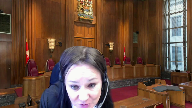
This is a question maybe I should have asked to Mr. De Groot, but you can answer.
Is it your position that in all matters where there are or there is an arbitration agreement, arbitration should always go ahead, even if we may be in a situation of receivership or in bankruptcy?
Mr. Slot, Mr. Slot, I’m sorry to interrupt you at the beginning.
Speaker 2 (00:03:21): We say that when the receiver or trustee is suing on the agreements and it contains a mandatory arbitration clause, then in those instances, yes, the arbitration agreement should govern.
Thank you.
But not all instances.
Not all instances.
Not all instances of a matter being a bankruptcy matter. Okay.
Speaker 3 (00:03:48): you.
But is your position restricted only to when the receiver is suing?
What happens when the receiver is being sued?
Speaker 2 (00:03:59): Well, when the receiver is being sued, I understand that there is a mandatory stay of enforcement against the insolvent parties.
And so the issue doesn’t arise.
We submit justices that we’ve got to deal with the insolvent parties.
Justice Jamal (00:04:19): would that stay apply when the receiver is sued in arbitration?
Overlapping speakers (00:04:25): Uh, yes.
Yes, I believe it would.
Justice Jamal (00:04:27): So, you’re proposing an asymmetric rule, basically.
Overlapping speakers (00:04:32): arbitration.
Justice Jamal (00:04:33): is stayed if the receiver is sued, but if the receiver is suing it cannot stay the arbitration.
Speaker 2 (00:04:41): Yes Justice, but there’s a principled reason behind that asymmetry.
In the first instance, it’s by operation of the Bankruptcy and Insolvency Act that the state operates, whereas in our case, what we submit is that the arbitration agreement governs and there’s no principle in law that allows a receiver who is suing to take the benefit of that contract and nullify the burdens.
And so we submit…
So just to be clear, it…
Justice Brown (00:05:15): where the receiver is sued, that is resolved by reference to bankruptcy law.
But if the receiver sues, that is resolved by reference to arbitration law.
Speaker 2 (00:05:28): Yes, and Justice’s, this asymmetry that we speak of, this actually arose in the 681 case and that’s at tab 15 of our condensed book.
And and here I think this highlights the asymmetry.
At paragraph 29, it states, while at first glance the principle is certainly an appealing argument for the plaintiff and relevant to the discussion here, when one reviews Reliance, Reliance deals with the opposite situation to the present case and what the case in Reliance dealt with is where the insolvent company was being sued.
And then the court goes on to say a part in arbitration agreement attempted to take arbitration proceedings against the bankrupt corporation.
Sorry, I should have just read because the case goes on to explain.
Of course, arbitration proceedings were stayed in the way that all actions or proceedings are stayed against a bankrupt corporation.
In the present case, it is a bankrupt corporation which wishes to take a legal proceeding which is the opposite situation.
Trustees routinely commence actions on behalf of the states under appropriate conditions.
Actions or proceedings by trustees and the states they administer are not stayed.
And that’s the situation we have here.
Justice Jamal (00:07:34): This is a ca-
Justice Wagner (00:07:34): There’s a, sorry, Chief.
I’m sorry, Justice Jamal.
Just one question, Ms. Lu.
Do you make a difference between the status of a receiver and a trust in bankruptcy?
Does that matter?
Speaker 2 (00:07:47): Well, it matters in the sense that there are different legal mechanisms, different operations of law make them a party, but in both instances, in this case, they are a party.
Justice Wagner (00:08:00): But I was under the impression that the receiver was was acting for the debtor and was not a third party.
Just a bit like the liquidator under the winding up act who’s not a trustee, who’s not trusting bankruptcy.
The liquidator will continue the personality of the debtor.
Same thing, the receiver will continue the personality of the debtor.
Is that the same reasoning?
Speaker 2 (00:08:30): Yes, it is the same reasoning.
So our submissions with respect to why the trustee is a party is because the action vests by the operation of Section 71 Bankruptcy Act.
Moving on to why um E&Y in its capacity as receiver is also a party um it falls to
Justice Jamal (00:08:50): It’s Lou, just the asymmetric rule that you were propounding, presumably there’s also a counterclaim by the non insolvent person or the parties not subject for receiver that would also be stayed presumably by virtue of bankruptcy.
So, it’s either, it’s either.
It would apply to counterclaims to presumably right.
Speaker 2 (00:09:15): It would apply to counterclaims.
In this case, I don’t believe there is a counterclaim.
Overlapping speakers (00:09:22): Okay.
Speaker 2 (00:09:22): And perhaps just to respond to the prior question about the receiver and how it becomes a party in our submission by operation of law, I think it’s important to start at the starting point.
And from my perspective, it’s two things happen when a party enters into receivership.
The first is that the receiver takes over management of the business and the prior management is paralyzed from acting.
But unlike a trust in bankruptcy, legal title to the debtors assets don’t vest in the receiver.
They pursue the action on behalf of the debtors and it’s used in the name of the debtors.
And these propositions are highlighted by Professor Wood at tab 20 of our condensed book.
Both propositions are highlighted at page 514, but I’ll pause on the first one because I think it’s the most relevant.
It says the appointment of a receiver does not have any effect on the debtors ownership of its assets.
Unlike a bankruptcy, there’s no automatic vesting of the debtors assets in the receiver.
The receiver therefore has no right to bring an action in his or her name in respect of the debt owed to the debtor.
The action is properly brought by the receiver in the name of the debtor since the cause of action does not vest in the receiver.
And justices in the Milton Vale Park decision, the Prince Edward Island Court of Appeal considered what it means when the receiver acts in the name of the debtor as Professor Wood states.
And it says it steps into the shoes of the insolvent company.
So if you’ll turn with me to our condensed book, tab 5, starting at paragraph 114, you’ll see they know there does exist judicial interpretation of the phrase act in the name of, albeit this is in the law of receivership.
Justice Brown (00:11:22): Just before we get there, will you be taking us to the order appointing the receiver?
Overlapping speakers (00:11:27): Yes, of course.
Justice Brown (00:11:29): It seems to me that, I mean, you’ll argue how you argue, but I would think the terms of the order are a good starting point.
Speaker 2 (00:11:39): I believe so too, Justice Brown.
Perhaps I could finish concluding here and then very, I’ll take you to the.
Overlapping speakers (00:11:46): Sure, that’s fine.
Speaker 2 (00:11:47): next because I think they tie together and what this court concludes is that it can be seen that a receiver steps into the shoes of the insolvent company.
The receiver acts in substitution for the suspending operating mind of the body corporate to carry out court-approved corporate acts and in this case we say a receiver should be considered a party to the arbitration agreements for four reasons and I’d like to take you to the receivership order at tab 17.
Justice Brown we say by the operation of this receivership order the receiver took over control and management of the business from the debtors who as you heard are paralyzed from acting and they step into the shoes of the operating mind and you’ll see a paragraph three it lists all of their powers they can take possession and exercise control of the property see they can manage and operate and carry on the business of the debtors and if you go to J which is highlighted on page four they have the power to initiate prosecute and continue proceedings on behalf of the debtor companies
Justice Côté (00:13:01): Ms. Lou, you are referring us to Section 3J, but what about 3F, when it says that the receiver has the power to receive and collect all monies and accounts now owed or year after owing to the debtors and to exercise all remedies of the debtors?
Overlapping speakers (00:13:22): Thank you.
Justice Côté (00:13:22): So is it a relevant section for what we have to decide this morning?
Speaker 2 (00:13:30): Well, it’s part of their powers, but it doesn’t change that even though they have the power to collect these funds, these funds, just like the cause of action, are not vested in them.
And instead what they’re doing is just receiving the monies and then at the end distributing to secure creditors.
Justice Côté (00:13:53): But all remedies of the deputers does it not mean that they can exercise the remedies of the deputers, no more no less? Exactly.
Speaker 2 (00:14:03): Exactly, Justice Cote, and that is my point is that when they commenced action and sued, they relied solely on the debtor’s contractual rights.
And when they sued on the contract, it includes the whole of the agreement, they can’t pick and choose and just extract out and choose not to rely on the arbitration agreement.
And we say, Justice Cote, that the style of cause is also telling because it names all of the debtors and makes it clear that the receiver is only acting on their behalf.
And for these reasons, we say that by operation of the receivership order, the receiver became a party to the debtor’s arbitration agreements under Section 15.
Ms. Liu, can I ask you just to follow, oh, sorry.
Justice Kasirer (00:14:48): I’d just like to follow up on Justice Cote’s question.
Is it relevant where we are in the performance of the contract?
If it’s an executory contract that’s been performed on one end and the receiver has what is for all intents and purposes an asset, is that relevant to the analysis?
Speaker 2 (00:15:14): We we don’t think it is relevant because at this point we would say that they don’t have an asset they have a cause of action that needs to be approved in court and the way that they’re going to try to obtain that asset that contingent asset is by bringing this action under these agreements and they can have no better rights than the debtors and so that what comes along is the arbitration agreement but
Justice Karakatsanis (00:15:42): up on that question, because I was going to ask if there is a counterclaim for specific performance
, for example, for another aspect of that agreement.
What’s the result then?
Speaker 2 (00:16:00): Well, I mean, there right now isn’t a counterclaim, and there isn’t a counterclaim for specific performance, but.
Justice Karakatsanis (00:16:07): But we have to interpret this to make sense, this provision, to cover the cases where there may be a counter-claim and there may be a counter-claim for specific performance.
And my question is, is the receiver subject to that?
What happens to the counter-claim in terms of the stays?
How do we interpret this in a way that is coherent?
Speaker 2 (00:16:30): the counterclaims would in our position be stayed including claims for specific performance and that’s just by operation we save insolvency loss.
Justice Karakatsanis (00:16:44): So it would result in a situation where some of the terms of the agreement would apply and some would not.
Speaker 2 (00:16:53): No, perhaps a better way to answer the question is to look at who is bringing those rights.
I think the law is clear that as against the insolvent company, they are protected from claims against them.
And so it’s only when they are bringing a claim that this matters.
And if, Justice, if you could turn with me to the ABN case.
And that is found at tab 14 of our authorities.
ABN was a case where the bank was assigned a contract that became an assignee to a contract that sought to enforce with an arbitration agreement.
And it sought to say that it wasn’t a party because it wasn’t a signatory to those agreements.
And at paragraph 15, the court rejects that argument and says ABN is in law a party to the arbitration agreement.
It is a fundamental and, I think, universal commercial legal principle that an assignor is not entitled to divide that which is assigned amongst assignees so as to convey the benefits and nullify the burdens.
Thus, a person seeking to enforce assigned rights under an agreement can do so, subject, can only do so subject to the terms and the conditions embodied therein.
And we say, Justices, that that passage and that principle of law is particularly apt in this case, where it is the receiver that’s choosing to bring a cause of action on the basis of these contracts that has to take the agreement as a whole.
Justice Côté (00:18:54): I would like to follow on the Justice Cazire’s question about if there are no more obligations to be performed under the contract.
You said that if I understood you properly that it’s not relevant.
Is it not relevant to see if the receiver has the power to disclaim the contract?
In other words, if there are still obligations to be performed by Petro West here, the receiver would have the right to disclaim the contract, but if there are no more obligations to be performed, is it not relevant to consider that to determine if there is a disclaimer power, if I can say so here?
Speaker 2 (00:19:35): Yes, Justice Cote, if there were still obligations left to be performed, then certainly the receiver has the power to disclaim.
Our position is just that there’s no power of partial disclaimer.
They have to disclaim the contract as a whole or enforce upon or take and perform it as a whole.
Justice Jamal (00:19:55): What about, since we’re in the receivership order, what about paragraph 3c which allows the receiver to cease to perform any contracts of the debtor?
The right to arbitrate is a substantive contractual right that’s well established and one could say that the receiver is prima facie bound and if it chooses to pursue arbitration it can, but it also has in this standard term the power to cease to perform the contract.
Speaker 2 (00:20:25): Right and I think that goes to the question though of whether or not the arbitration agreement is truly a separate contract and it goes to the doctrine of separability and how it’s applied.
It can cease to perform the arbitration contract but we have to remember the arbitration contract lies within the underlying agreement so they need to be taken together.
The BC Court of Appeal invoked the doctrine of separability to say we can separate them so that you can disclaim one but not the other but as you’ll hear from my colleague Mr. DeGroote, the doctrine of separability doesn’t work that way.
Justice Jamal (00:21:05): I don’t think it’s a separability question.
The contract can be entirely non-executory, all the other obligations could have been performed, but given the power to cease to perform any contracts of the debtor, that could be then the only remaining obligation.
It doesn’t mean it’s null, inoperative or incapable of being performed, it simply means that the receiver has exercised the court-appointed power to cease to perform the contract, the remaining obligation to arbitrate.
Speaker 2 (00:21:39): Right, but I think in this case, though, then, respectfully, what we have here, though, is that we are not talking about, the concept of adoption and disclaimer really comes up, as you say, in the notion of the executory context, and it matters because it matters as to whether or not the receiver will have personal liability for those contracts, but that’s not what we’re doing here.
I think how we are framing the issue is that they’re suing on these contracts, and so when they sue, they have to take the contract as a whole.
Justice Côté (00:22:27): Go ahead, Justice Ruhl.
Justice Rowe (00:22:29): But isn’t is not the key to all this what you’re you seem to be implicitly saying and it may be Mr. DeGroote who’s going to address this that it is not within the authority of the supervising judge to say this arbitration will not proceed.
Having regard to the proper conduct of the insolvency, this arbitration will not proceed.
And isn’t that the key?
What is the authority of the supervising judge vis-a-vis these agreements?
Speaker 2 (00:23:05): That’s right Justice Roe and you’re right on two counts.
I agree with your characterization of the law and also that my colleague Mr. DeGroot will address that point more fulsomely.
Justice Côté (00:23:17): Ms. Liu, I have a question going back to that disclaimer issue.
The Court of Appeal here said that the receiver had implicitly disclaimed the arbitration agreement by initiating the claim in the civil court.
But what do we do with the fact that in his submissions, the receiver says, I never disclaimed the contract or the arbitration agreement?
Speaker 2 (00:23:45): That’s correct and we understand that that is the fact that they didn’t disclaim
and so our submission is that they are a party, section 7, 15 sub 2 governs and there is nothing void inoperative or incapable of being performed about the arbitration agreement.
And so perhaps I’m just looking at my time.
I would like to address the respondent’s argument that the Arbitration Act does not define a party as including a person claiming through and under and therefore the receiver is not a party.
Perhaps I could just touch on that very briefly.
Implicit in the respondent’s interpretation is the premise that only a signatory can be a party so everyone else is claiming through and under that party, but we submit that the interpretation of the word party is not that narrow.
We say it includes trustees and receivers who become bound to the arbitration agreement by operation of law.
And I have two authorities for this.
One is the Caverett-Steele decision.
It’s an Alberticor Appeal case at tab 3 of our authorities.
It makes clear that the concept of party is broad enough on its own to capture non-signatories bound by operation of law or submission of contract.
You find that at paragraph 15 when the court states, associated and connected parties like subsidiaries, shareholders, directors, employees, agents, and the like might be required to join an arbitration one of three ways, by the governing law, by the submission itself, and to the extent the parties to the contract can bind other parties or by later agreement the other parties.
But they go on to find that none of these apply here and in that case was about shareholders and subsidiaries that sought to be bound.
And it’s only at that point when they say that they don’t meet these three tests that the court considers, well, is there additional through or under language in the arbitration act to capture what the court referred to as these extra parties and found that there was none.
And so we say that this case demonstrates that a party includes non-signatories bound by operation of law and that you don’t need the term a party claiming through or under because that refers to someone outside that
and I don’t know if that’s a good way to put it, but it’s a good way to put it.
And I don’t know if that’s a good way to put it.
Speaker 3 (00:26:14): But may I just interject here and ask you that, but within BC’s own legislation, in the International Commercial Arbitration Act, they do use the through and under law.
So could you sort of explain to us the implications, if any, of a different usage in an act that has a similar content?
Speaker 2 (00:26:38): Sure.
I have two responses for you Justice Martin.
The first is if you turn to condensed book tab 21 you’ll see that Casey actually considers my friend’s argument that only signatories can be considered a party and so the through and under language has to be required to bind on signatories and you’ll find that page 71 I apologize it’s not highlighted but right after the introduction of the ABN case Brian Casey writes in this case a contract including an arbitration agreement was assigned to a bank as security.
He goes on to say Justice Hallie held in these circumstances the bank was not a party to the arbitration as where an arbitration agreement is inviting it must be signed by the parties and the word party did not include a person claiming through or under a party.
On appeal to the divisional court the decision was overturned on the legal principle that an assignor is entitled is not entitled to divide that which is assigned amongst his assignee so as to convey the benefits and nullify its burdens and I also would bring this court’s attention to the Mossimo case it’s not in our condensed book but it is at tab 38 of the appellant’s authorities and the reason why that’s relevant is that that is a case out of the BC Arbitration Act and in that case an assignee to agreement was found to be a party notwithstanding that there was no through or under language and that is at paragraphs 18 and 42.
I’d like to conclude my submissions now and turn the mic over to Mr. DeGroot now.
Justice Côté (00:28:32): Miss Liu, I have a question for you before you go. Sure.
The section 15 of the arbitration agreement, which governs this case, says at the beginning, a party to an arbitration agreement.
It has been amended.
Now it is section 7, and it begins a party.
If a party commences legal proceedings, is there any argument to draw from the fact that section 15 is saying party to an arbitration agreement?
And the new section 7 says a party commences legal proceedings.
Speaker 2 (00:29:13): No, in an article written by Independent Arbitrator Tina Schicchetti and Senior Legal Counsel to the BC Ministry Johnson Eads, found at tab 75 of our materials, they look into that section and say that it’s a housekeeping matter only and the reason why it matters is because they are, they were part of the committee that made recommendations to the Attorney General for the amendments into this 2020 Act.
Thank you.
Justice Wagner (00:29:53): Is it a Groot? Yeah.
Speaker 1 (00:29:54): Yeah, thank you, just changing the mics over.
I’m going to start just briefly by addressing the insolvency matters given some of the questions that were raised here.
And in particular, just to start with the proposition with respect to the asymmetry, there will necessarily always be an asymmetry in claims by and against the estate of insolvent party.
In particular, any claim against an insolvent party is stayed.
In this case, it’s stayed by operation of section eight of the receiving order, which you can find that at the condensed book of authorities at tab 17.
And again, that’s section eight of that.
And so there’s always going to be this asymmetry of claims against it, but from a bankruptcy and insolvency perspective, there’s a policy rationale behind that.
And that policy rationale that the court relies upon is what’s known as the single proceeding model.
And we can see authority for that in the description of that at the century services decision.
And I’d have you turn to tab 11 of the condensed book of authorities of the appellate.
This is the century services decision.
Again, it’s tab 11 of the condensed book at paragraph 22.
And I’m going to be starting at the second or third sentence in beginning the nature.
So at this paragraph, the court rates, the nature and purpose of the single proceeding model are described by Professor Wood in bankruptcy and insolvency law.
They all provide a collective proceeding that supersedes the usual civil process available to creditors to enforce their claims.
That’s the important part to enforce.
The creditors remedies are collectivized in order to prevent the free for all that would otherwise prevail if creditors were permitted to exercise their remedies.
In the absence of a collective process, each creditor is armed with the knowledge that if they do not strike hard and swift to seize the debtors assets, they will be beat out by other creditors.
The single proceeding model avoids the inefficiency and chaos that would attend insolvency if each creditor initiated proceedings to recover the debt.
And so what the important part about this is that in short, the single proceeding model addresses a collective action problem, which is colloquially known as the tragedy of the commons.
But that policy position simply has no application when a receiver is seeking to pursue claims outside of the estate.
In this case, the question is simply, how are those actions to be proceeded with?
Are they be proceeded with by litigation or by arbitration?
Justice Rowe (00:32:31): And why is that not subject to the authority of the supervising judge?
Is that not part and parcel of the proper realization of the assets plus the efficient resolution of all these matters?
You’re saying there’s a curve-out.
There’s a curve-out from the authority of the supervising judge where a receiver initiates a claim against a contractual party and the contract contains an arbitration clause.
The logic of your position is, if I’ve understood it, it is beyond the competence, beyond the authority of the supervising judge to say, no, that will not proceed by way of arbitration.
It will proceed in another manner.
Speaker 1 (00:33:22): So Justice Roy, I think if I understand the question that our position in responding to that is that the reason why a supervising insolvency court would not have the jurisdiction to pull that into the single proceeding model is because there simply is no jurisdiction in the statute.
And in this case, by citing the single proceeding model,
Overlapping speakers (00:33:44): Which statute?
Speaker 1 (00:33:46): the Bankruptcy and Insolvency Act and I’ll take you there.
So my friends have suggested that this policy objective of the single proceeding model and efficiency and efficacy are the underlying reasons to allow this.
The sections they cite of the BIA to ground that jurisdiction in order to exercise that discretion are in sections 243 and sections 183 of the Bankruptcy and Insolvency Act.
And in that regard, I’m gonna begin just with section 183.
Section 183 of the Bankruptcy and Insolvency Act is simply, it has a limited purpose.
And what the purpose is, is that it invests superior courts with the jurisdiction of law and equity as well allow them to exercise jurisdiction in bankruptcy and other proceedings under the BIA.
And superior courts as superior courts have an inherent jurisdiction, but that cannot be used to overturn statute, which in this case, the Arbitration Act includes mandatory language that limits the ability of the superior court to exercise its inherent jurisdiction.
Justice Rowe (00:34:53): Hang on.
You said inherent jurisdiction.
183 sub 1 says original auxiliary and ancillary jurisdiction.
It does not say inherent jurisdiction.
And I would treble underline original jurisdiction.
Speaker 1 (00:35:11): Yes, and it’s our submission, and this is in the Baxter decision from this court as well, that the jurisdiction granted by this provision is subject to statutory limitations, which includes the Arbitration Act that includes mandatory language requiring the matter to proceed to arbitration.
Justice Rowe (00:35:30): to the Bankruptcy and Insolvency Act is subject to the provincial jurisdiction.
Speaker 1 (00:35:38): I think the best way to look at that is that the is if we look at the decision of GMAC versus TCT, I think, and that’s at tab 13 of the condensed book of authorities.
And this is actually in relation more to the section 243 submission, but it has equal application to section 183 that just to give some background here, section 243, which is also relied on by the respondents and the IIC to ground a jurisdiction to do this is a similar section to what is formally section.
Well, it section 47 to see.
And in this case, Justice Avella formerly of this court stated at paragraph 51, if the net, if the section 47 that were interpreted widely enough to prevent permit interference with all rights which though protected by law, represent and inconvenience to the bankruptcy process.
It could be used to distinguish extinguish all provincial employment rights if the bankruptcy court thinks it’s quote advisable under section 47 to see explicit language would be required before such power could be attached to section 47 in the face of the preservation of provincially created civil rights in
Justice Moldaver (00:37:11): what if we’re not talking about an inconvenience?
What if we’re talking about a significantly, significant compromise of the objectives of the Bankruptcy Act?
And in fact, I understand the application judge’s reasons.
That’s precisely the basis upon which he said, although he was doing it under 183, not 240, sorry, he was doing it under 183, one as opposed to 243.
That’s precisely what he spent about three pages of decision discussing and saying, in the particular circumstances of this case, this power that I have, which should only be used exceptionally, should be used here because otherwise, if we get into four different arbitrations and so on and so forth, this thing is going to go into a black hole and we’ll never get this decided.
Those are my words, not his, or hers, I mean.
Overlapping speakers (00:38:16): Thank you, Justice Muldiver.
And with respect to the Chamber of…
Justice Moldaver (00:38:20): My point very simply is that language that you just took us to says inconvenience.
Speaking for myself, we’re not talking about inconvenience here.
We’re talking about something that can throw the whole purpose and the main objectives of the Bankruptcy Act into chaos.
That’s what we’re talking about.
Speaker 1 (00:38:42): And Justice Muldiver, I think that the important part here is that the, in moving on, like with respect to the quote is that explicit language would be required before such a sweeping power could be attached to section 47 in the face of the preservation of provincially created civil rights in section 72.
Right, so what they’re talking about is successor rights for unions. Yeah.
Justice Rowe (00:39:03): You
Overlapping speakers (00:39:03): Exactly.
Justice Rowe (00:39:03): That’s the rights for you.
Overlapping speakers (00:39:04): Yeah.
Justice Rowe (00:39:05): completely different nature as opposed to how much money you owe.
Speaker 1 (00:39:11): And Justice Roe, that case on its facts is speaking about successor rights in relation to unions.
But the principle that is being expounded in this case is that through section 72 and the preservation of provincially created civil rights, those are protected through the BIA and that explicit language would be required to overturn that.
I’d also just like to point out that there’s not, it would not throw the system of insolvency law in my submission into chaos.
There are provisions within arbitration agreements that allow for consolidation and arbitration can be actually be conducted in a more efficient manner by doing things such as limiting rights of, or where the parties.
Justice Rowe (00:39:54): I’m going to follow on here.
What you’re saying is the remedy to any practical problems in the nature that Justice Moldaver has indicated is to go to the arbitrator and seek to have the arbitrator organize things in a more efficient way, as opposed to the supervising judge saying, I’m going to make certain orders which will cause matters overall in an integrated way to be handled in an efficient way.
What you’re saying is jettison the single control model and carve out an area which is a no-go area for the supervising judge.
The supreme authority is to be the arbitrator, not the supervising judge under the single control model.
It seems to me that’s absolutely at the heart of your submissions.
Justice Moldaver (00:40:54): And if I could just interrupt too, just to add to this what my colleague just said, kind of in response to what you just said about, you know, there is provision in the Arbitration Act for the parties to agree to consolidate and so on, but it talks about all the parties to those agreements agree.
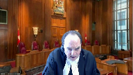
So we would need, we would need to have the consent of your client, number one.
And also there is suggestion here that there are some issues that aren’t, some things that are to be collected that aren’t bound by arbitration agreement.
So I don’t know where they go in all of this, but they would, it seemed to me, not be part of this scheme that you have in mind and they’d have to be settled separately in an action.
I mean, you got to look at the whole picture here and all the circumstances.
And the trial judge or the application judge, in her wisdom, said, hey, this is going to be a mess.
And by the way, it causes no prejudice to your client to have this done in the court.
So this is what’s troubling me in this whole thing.
And if the application judge had that authority, it’s an exercise of discretion.
And it seems to me you have quite a road to hoe to overrule, to get that overruled.
Speaker 1 (00:42:28): With respect, we submit that there is no discretion that allows the court to overturn the Arbitration Act.
With respect to the scheme of the Bankruptcy and Insolvency Act, this is a matter in which there is no relief that is related to the Bankruptcy and Insolvency Act, and that’s an important consideration.
In the decision of Sam Levy, which is at tab 12 of our condensed book, and looking at paragraph 39, so this is tab 12 of the condensed book, the Sam Levy decision, paragraph 39, the court says, there are limits, of course.
If the trustee’s claim is in relation to a stranger to the bankruptcy, i.e. persons or matters outside of the act, or lacks the complexion of a matter in bankruptcy, it should be brought in the ordinary civil courts and not the bankruptcy court.
And then the court goes on at paragraph 50 to say, it is well established that the Bankruptcy Court does not have the general jurisdiction of a civil court to award damages in breach of contract cases.
And so what we’re submitting is, this action has already been asserted as a separate action outside of the insolvency proceeding. Yeah,
but it goes.
Justice Moldaver (00:43:43): but it goes to the bankruptcy state.
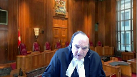
How much is there going to be to distribute amongst the secured creditors and whatever?
I mean, it’s integral for the trustee to know what the estate is and what’s in it.
And this trustee is of the view that it’s worth pursuing these matters.
So how can you say that this isn’t related to the bankruptcy?
Speaker 1 (00:44:07): Well, when the court in the Sam Levy decision states that it’s related to the bankruptcy, what the court is saying is, and this goes on in paragraph 50, it states, it is restricted to the jurisdiction and remedies contemplated by the act.
And so what the act provides is for a series of provisions for the distribution of assets.
It does not address, nor does it have any mechanism to address how matters should be dealt with when pursuing claims.
Justice Moldaver (00:44:34): Sorry, if in fact the trustee collects $10 million on behalf of Petro West, what the bankruptcy proceedings will already be conducted and finished and everything, because it really doesn’t matter.
That $10 million is going to go where?
Overlapping speakers (00:44:51): Well, it will go into the estate, that is…
Justice Moldaver (00:44:54): will of course it will so to say that it’s disconnected from what the bankruptcy proceeding is all about is with respect the submission that I just find it amazing.
Justice Kasirer (00:45:08): And isn’t it true, just to follow up on Justice Moldaver’s preoccupation, isn’t it true that the Sam Levy case that you cite has been interpreted in the arbitration setting to allow for the exercise of discretion one way or the other?

I’m thinking of Quebec jurisprudence cited by the Intervener Centre Canadien.
Overlapping speakers (00:45:31): bien d’arbitrage commercial.
Justice Kasirer (00:45:34): the re-ETI case of the Quebec Court of Appeal, where after looking at the weighing that Justice Moldaver alludes to, they came down on the side of arbitration.
It looked like it would be, as you suggested earlier, Mr. de Groot, a circumstance where that would be efficient and helpful.
And then another case, a leading case decided by Justice Gascon when he was on the Superior Court in Avesta, where he said, no, it was sufficiently complicated and there’s a weighing of circumstance.
He took into account stability of contracts and contractual freedom that would support your view.
He took into account the concerns that Justice Moldaver mentioned.
He weighed them and he did it under the authority, as Justice Roe suggested, of the Bankruptcy and Insolvency Act.
So Sam Levy doesn’t look like blocking the way, on the contrary.
Speaker 1 (00:46:39): Well, I think that in relation to Sam Levy, the case, it relates to whether the relief or whether what is being pursued is within the jurisdiction and remedies contemplated by the act.
And in this case, what is being used are the rules of court right now to advance this matter.
And so there’s no relief that arises under the act other than the fact that through this act, there’s no relief under the act to be clear there.
What will occur and what I don’t dispute is if there is a successful action, those funds will go into the estate.
With respect to the ETI decision, that decision did find that the matter should proceed by arbitration.
And some of the other cases cited by my friends though, to rely upon the single control model typically are cases that involve claims against the estate or involve issues of the stay against the estate.
I don’t, the reliance decision, the Smokey River decision.
But the purpose of a receivership and the grounding of authority in section 183, as well as in section 243, does not contain any express language.
And in fact, that is why we already see that the action is proceeding as litigation and not as arbitration.
Mr. DeGruyne.
Justice Côté (00:47:57): But Mr. DeGroote, on that jurisdiction issue, you say that the court has no discretion at all to determine whether insolvency or arbitration proceedings are to be given priority.
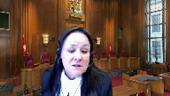
You seem to say that in all situations, arbitration proceedings should be given priority.
But what about the following?
Section 15.2 gives a court the power to say that the clause is null and void or inoperative.
It is there in section 15.2.
So the court has the power, not the receiver, not the arbitrator, it is the power of the court to determine if the clause, let’s say, is inoperative in the present instance.
That coupled with the jurisdiction of 243, because 243, of course, it talks about the powers to be given to the receiver, but it is essentially a determination by the court about what the receiver can do and cannot do.
So if we combine section 15.2 and 243, is it not a very strong basis for a court to determine if in a specific case, priority should be given to arbitration proceedings as opposed to proceeding in a civil court?
I’m not talking about the determination of this case, but on the law.
Are you saying that a court does not have jurisdiction?
Speaker 1 (00:49:23): So what I would say is under the Arbitration Act with respect to Section 15.2 and the language of void, inoperative, and incapable of being performed, the Court does have a jurisdiction under that Provincial Act to decide whether or not an arbitration agreement is void, inoperative, or incapable of being performed.
But the important part is that with respect to the interpretation of that phrase, void, inoperative, and incapable of being performed, that has an interpretation that exists within the statutory intention of the Arbitration Act, which is to preserve space for arbitration.
And what I’ll take you to there is this idea.
Justice Rowe (00:49:58): I don’t think there’s any question about void because that would mean that ab initio was
Overlapping speakers (00:50:03): mmm
Justice Rowe (00:50:03): ineffective.
It’s really, I think the action here is inoperative, and inoperative by virtue of an order of a judge under the BIA.
In other words, it’s not capable of being enforced because the judge says it’s not capable of being enforced, which I come back to the point, the crux of your position, it seems to me, is an order of that nature is not within the authority of the judge under the BIA.
If it is, you lose.
If that’s beyond the competence of the authority of the judge, maybe you win.
Speaker 1 (00:50:44): Justice Roe, I think that’s correct, that our position is that neither Section 243 nor Section 183 ground this jurisdiction.
The jurisdiction defined it, and I agree as well that this is not a question of a void, it’s a question of potential inoperativeness, and in that respect, what I would have you turn to is the Seidel decision at tab seven of the Condensed Book of Authorities.
And this is the decision of Justices Lebel and Deschamps in dissent but not on this point at paragraph 118, here they state, it is clear that the task of the court responsible for considering whether the agreement is void, inoperative, or incapable of being performed cannot properly be construed so broadly as to authorize it to determine whether a class action would be a preferable procedure.
And then just skipping ahead, the arbitration agreement would as a result be subject to the whim of the party wanting to avoid its application.
More specifically, the word inoperative cannot be interpreted so broadly that a mere procedural decision of a party seeking to certify a class proceeding would suffice for that party to avoid the operation of the agreement to arbitrate.
And this is also then built upon in the Wellman decision, which is at tab…
Justice Moldaver (00:52:17): Just before we go to Wellman, I mean again you’re using a mere procedural thing.
Why don’t we look at the reasons of the application judge here at paragraph 60 of her reasons.
And if you go to about the fourth line or fifth line of her reasons, the difference in the cost and time involved of prosecuting the claimant court as compared to the multiple arbitration proceedings is substantial.
The bankruptcy order was made in April 2018, which by the way here we are four years later deciding what process to use.
That’s my interjection.
It will not be possible to distribute the proceeds.
I’m going to emphasize that.
It will not be possible to distribute the proceeds of the bankruptcy states until these disputes are resolved.
I agree that the inherent jurisdiction court should be used sparingly.
However, the significant cost and delay inherent in the multiple proceedings that would occur in this case as compared to judicial termination is unfair to the creditors contrary to the objects of the BIA.
The absence of any prejudice to the dependents is an important distinguishing feature.
You know there’s all kinds of issues brought up in this case but speaking for myself it begins and ends there unless you can convince us as to your point that there’s no authority for the supervising judge to do what she did.
Speaker 1 (00:53:57): Well, sir, with respect to the four years later and the inefficiency of trying to determine a procedure, I would simply state that, you know, had the matters proceeded as arbitration, there’s a good chance this would all be resolved anyways.
And there’s an underlying assumption in this that arbitration is inefficient, but with respect to the jurisdiction to do this, we maintain that that jurisdiction arises through the language of Section 15.2 of the Arbitration Act and that the BIA does not provide a jurisdiction to do this.
Justice Jamal (00:54:29): I ask you, Mr. De Groot, really, I think this is being pitched and in my sense is this may be being pitched at an excessively high level of generality as a clash between arbitration and bankruptcy.
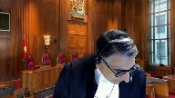
At the end of the day, there’s no dispute, I take it, that the receivership order that was issued is granted under the court’s authority under Section 243 of the Bankruptcy Act inter alia, that certainly Section 243 of the Bankruptcy and Insolvency Act, that is the basis upon which that is the taking any action that the court considers advisable.
It always remains under court supervision and 3C of the order specifically allows the receiver to cease to perform any contracts with the debtor.
When the receiver does that, it is subject to court supervision, the court may decide actually you shouldn’t be doing this, but it’s not the court deciding that the arbitration agreement is somehow evaporated, it’s simply the debtor acting under the authority of a court order to cease to perform an obligation under a contract and the court may decide that the receiver shouldn’t be allowed to do that, so there’s no absolute rule, but it does ultimately come down to the granular and so there’s no conflict between bankruptcy and arbitration, it’s under the terms of the Bankruptcy Act and the order.
Speaker 1 (00:55:53): Except in this case, what is happening here is that the receiver is embracing and pursuing the contractual claims while attempting to avoid the arbitration clause that exists within those contracts.
And the part of the, we just read Seidel, and that case stands that it’s not a preference-based approach, but I’d like to just discuss briefly, because this matter of the performance and the disclaimer has come up, and I would just note that at the respondent’s brief at paragraph 81, they state repudiation or disclaimer of a contract does not destroy rights of action accrued as a result of prior breaches.
And so that is where we are in this action, is this is not necessarily a situation of disclaimer or adoption of the contract on a forward-looking performance basis, it’s directed at the pursuit of historical actions that have already accrued.
And in that regard, Bennett on receivership has stated that a receiver can decide to pursue, they can decide to ignore, they can also just decide, they could decide to sell the causes of action.
But this is not a case about disclaimer or adoption, it’s a case about embracing and pursuing a cause of action.
And in that regard, as my friend had made note of about the picking and choosing of the benefits and burdens, a decision that has some relevance, it’s in the U.S. context, it’s the Griswold decision, so that’s at tab 8 of the book of authorities, of the condensed book of authorities.
And this is a decision in relation to a pure non-signatory, which even then does not apply, it doesn’t address the question of operation of law, but at page 273 of that decision, which is on the second page and it’s the highlighted portion in the right column, the court states, equitable estoppel thus prevents a non-signatory from cherry-picking the provisions of a contract that it will benefit from and ignoring other provisions that don’t benefit or that it would prefer not to be governed by, such as an arbitration clause.
And then just moving to the last sentence, a non-signatory cannot knowingly embrace the contract only to later turn its back on the provisions in the contract, such as an arbitration clause.
Justice Moldaver (00:58:18): Those are matters that the supervising judge will take into account in deciding whether or not to let the action proceed or to require the trustee to engage in arbitration.
It’s a factor to take into account with respect, seems to me.
Speaker 1 (00:58:35): And I think that the factor to take into, with respect to the jurisdiction on this, it arises under the Arbitration Act and we’ve repeatedly said the supervising judge.
In this case, Justice Iyer of the BC Supreme Court was not sitting as a supervising judge.
This case was already existing outside of any insolvency or receivership type of proceeding.
Justice Côté (00:59:02): I have a question for you.
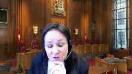
We know that after a receivership order is issued, the receiver and anybody with an interest can come back to the court and file motions for directions.
What about the following?
Let’s say that the receiver, before launching the civil lawsuit, would have filed a motion for directions under 243 of the Bankruptcy Act and asked the court, the judge, to say, please declare the arbitration agreement inoperative because I want to launch a civil lawsuit.
Do you think in a circumstance like that, that the court would have had the power under 243 and 15-2 to say the clause, the arbitration agreement is inoperative, and yes, receiver, you can file your claim in the civil court instead of going to arbitration.
Speaker 1 (00:59:55): I think in that situation, Section 243, which I haven’t had a chance to discuss in detail, does not provide the jurisdiction to do that.
The La Mer Lake logging decision, I’ll just state, in that case, the court confirmed that the purpose of Section 243 is simple and narrow, and it’s the establishment of a regime allowing for the appointment of a national receiver, and then that also goes to the decision in GMAC versus TCT around the language of advisable in subsection C being subject to provincial jurisdiction through Section 72.
Justice Côté (01:00:31): But 243 is the same language than Section 47 about the appointment of interim receivers.
And I think one of the interveners, the Insolvency Institute of Canada, is quoting some decisions in its factum to say that it is the same language.
And Section 47 has always been interpreted as giving very broad powers to the judge in the bankruptcy court.
So why should we not adopt the same interpretation for the language of 243?
Because it is exactly the same language as Section 47.
Speaker 1 (01:01:05): Well, I think that with respect to section 243 sub 1 sub C, you are correct, it overlaps with 47 2C. I just refer the court again that it’s subject to provincial jurisdiction.

Though that had the receiver done what you suggested, that would be a more appropriate way to at least attempt to address this question.
But in this case, we have an action that the receiver has obviously concluded exists outside of any relief under the bankruptcy and insolvency act.
And that action should be subject to section 15.2.
And the word inoperative does not relate to the purpose of the statute, does not allow for an interpretation of inoperative that would allow the receiver’s preference to be promoted.
And I noticed my time is up.
And so unless there’s other questions, those are my submissions.
Justice Wagner (01:01:53): Thank you very much.
Speaker 4 (01:02:03): Oui, bonjour, Vos Seigneuries, pour le compte du Centre canadien de l’arbitrage commercial, mes représentations seront limitées à la question de ce qu’est une partie à la convention d’arbitrage qui nous concerne ici aujourd’hui.
Le premier juge avait conclu que le séquestre était une partie à la convention d’arbitrage du seul fait qu’il exerçait les droits contractuels de la partie intimée et je pense que cette décision est la bonne et que la Cour d’appel qui a renversé cet aspect de la décision fait erreur.
L’intervenant propose plutôt qu’il existe une présomption en droit que toute personne qui se prétend détenteur de droits au terme d’un contrat qui contient une convention d’arbitrage et liée par cette convention à moins d’en démontrer par l’un des motifs prévus par la loi que celle-ci ne s’impose pas à lui.
Dans le cas qui nous concerne, la Cour d’appel de la Colombie-Britannique au paragraphe 56 de ses motifs a bien noté qu’il n’était pas permis à un séquestre et donc à la Cour ayant un pouvoir de supervision à son égard de choisir ce qui l’intéressait dans un contrat et d’écarter ce qui ne l’intéressait pas.
Il est incontestable que les parties appelantes ici comme signataires du contrat contenant la convention d’arbitrage possédaient et possèdent le droit substantif d’exiger de procéder par arbitrage.
Ce n’est pas un droit bilatéral mais un droit que chacune des parties possède et la loi à l’article 15.1 de la loi sur l’arbitrage de Colombie-Britannique prévoit qu’une partie qui est attrait dans la procédure judiciaire a le droit d’exiger leur emploi.
Justice Wagner (01:04:14): Je m’excuse de vous interrompre, j’avais une question.
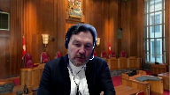
Êtes-vous d’accord avec le principe selon lequel en matière d’insolvabilité, il y a quand même une grande discrétion du juge saisie du dossier parce qu’il doit considérer l’impact des décisions du syndic sur l’ensemble des créanciers.
Donc, il doit non seulement regarder les droits d’un individu, les obligations, mais l’ensemble.
Jusqu’à quel point cette discrétion-là dans ce cas-ci, évidemment, vous ne pouvez pas vous prononcer sous le mérite, mais dans ce cas-ci, cette discrétion-là a pu effectivement faire la différence.
Speaker 4 (01:04:58): La position du Centre canadien de l’arbitrage est que d’approcher la question de cette façon et de revenir vingt ans en arrière avant la jurisprudence de cette Cour dans les arrêts, Députo, Dell et Chouette et Uber encore plus récemment en plaçant l’arbitrage sous une lumière différente de celle d’une instance judiciaire.

En lui donnant une valeur qualitative différente, inférieure et qui permet de se poser la question de savoir si la justice que les arbitres rendront sera de la même qualité que celle d’un tribunal judiciaire à l’égard des parties intéressées par la faillite.
Nous ne sommes pas dans un cas de loi sur les arrangements avec les créanciers où le tribunal a des pouvoirs nettement supérieurs que celui qu’il a en matière de faillite.
L’arbitrage a été reconnu par la jurisprudence que nous citons dans notre mémoire comme étant reconnu par les tribunaux en matière de faillite.
Justice Kasirer (01:06:04): Je poursuis la question du juge en chef parce que, si j’ai bien compris, il ne proposerait pas un retour en arrière de 20 ans pour tabasser l’arbitrage dès qu’un tribunal n’a pas envie de perdre le contrôle du dossier.
Dans votre propre mémoire, au paragraphe 14, vous citez la jurisprudence québécoise qui est le fruit de l’exercice de ce pouvoir discrétionnaire.
Vous citez la cour d’appel dans ETI, vous citez le juge Gascont dans le jugement à Vestor et dans les deux cas, si j’ai bien compris, c’est un peu ce que le juge en chef évoque, c’est une pondération du pour et du contre et le juge qui supervise le tout, tout comme M. Muldaver a dit tantôt, le paragraphe 60, on pèse le pour et le contre, parfois l’arbitrage va être plus efficace, parfois non.
Il n’est pas question de tasser l’arbitrage.
Est-ce que vous pouvez expliquer davantage votre point sur ce sujet?
Speaker 4 (01:07:24): Oui, tout d’abord, ces arrêts pour celui de ETI de la Cour d’appel a été rendu la même année que l’arrêt de cette cour dans Grey Condemnter, qui, à mon avis, dépasse ces arrêts où les prononcés que l’on retrouve étaient davantage des obitaires que la ratio de la décision de la Cour d’appel ou de l’arrêt de la Cour d’appel.
Et deuxièmement, je ne crois pas que la loi sur la faillite donne à un juge le pouvoir, à un stade préliminaire d’une demande de référence à l’arbitrage, de commencer à se poser la question de savoir si l’arbitrage est plus approprié qu’une instance judiciaire.
Ce n’est pas le rôle du juge.
Et d’ailleurs, notre mémoire indique que cette question aurait dû être référée à l’arbitre, puisque la clause d’arbitrage n’était pas attaquée comme étant nulle ou visée par un vice fondamental.
Donc, pardon, Madame la juge, je suis à côté.
Justice Côté (01:08:25): Je voulais demander au juge en chef si j’ai la permission de vous poser une question.
Overlapping speakers (01:08:29): Une dernière question.
Justice Côté (01:08:30): Merci.
Maître de Brundt, dans l’exemple hypothétique que j’ai donné tantôt à Maître de Groot en disant que dans ces matières de séquestre, le séquestre peut toujours revenir devant le juge qui a rendu l’ordonnance de séquestre pour demander des instructions.
Alors, les fameuses requêtes pour direction.
Si ici le séquestre, au lieu d’avoir procédé comme il l’a fait, un séquestre peut aller demander au juge de déclarer inopérante la clause d’arbitrage, généralement parlant, où il n’a jamais ce pouvoir.
Speaker 4 (01:09:01): Procédurellement
, je pense que ça aurait le même effet qu’une demande de la part d’une partie dans une procédure judiciaire de demander le renvoi à l’arbitrage.
Ce serait la même analyse et le juge qui serait saisi d’une requête pour directive à la demande de la partie ici appelante se devait et avait l’obligation de référer les parties à l’arbitrage.
Je ne peux que référer au motif de monsieur le juge Bachand dans l’arrêt que nous avons rajouté tardivement puisqu’il a été rendu il y a une semaine où il indique que les États dont le Canada ne peuvent pas et ne devraient pas créer des espèces d’ouverture et de champs d’inarbitrabilité parce que ceci les placerait en violation de leurs engagements au terme des traités qui les lient dans la convention de New York. D’accord.
Merci beaucoup. Merci.
Justice Wagner (01:09:53): Miss Munro?
Speaker 5 (01:09:58): Thank you justices.
I’ll start by saying that my submissions are limited to the issue of the principle of separability under arbitration law and as I’ve said in my factum that is a concept which is distinct from and serves a different purpose than the contract principle of severance even though they both may result in a separation of the arbitration agreement and the main contract but that’s not to say that the arbitration agreement or arbitration law will always prevail and so my submission is that where the facts give rise to an issue about whether the principle of separability or the principle of severance apply the court is obliged to undertake the analysis including the BIA analysis in this case and determine whether there is a conflict and there may not be a conflict in the law.
So the interpretation of the principle of separability in this case and here where there is a dispute over both the scope and the applicability of separability in the BC Court of Appeal decision and because the BC Court of Appeal decision applied to separability in a novel way our submissions are that that the law would benefit from some clarity from this court on that issue.
So there is consensus in the case law and in the commentary put before you that the principle of separability does apply where there is a challenge to the party’s main contract and the effect of that is that the arbitration agreement is unimpugned for the purpose of the arbitrator’s ability to determine jurisdiction.
There’s disagreement in this case on whether separability is broader and also applies where there’s a challenge to the arbitration clause alone and that is where the the principle of severance may also be engaged.
So the principle of of separability is obviously critical to this case but it must be distinguished from a related principle of competence-competence and that is that the arbitrator has the jurisdiction at first instance to rule on its own jurisdiction and so even whether there’s a challenge to the validity of the arbitration agreement pursuant to which the arbitrator is appointed the arbitrator is given first chance to make that jurisdiction determination.
Separability on the other hand treats the agreements as independent from one another where it applies to allow for the arbitrator to make its jurisdiction determination and in this case the principle of separability that applies can be found in the legislation the BC 1996 Arbitration Act and the two sets of rules which were incorporated into the party’s contract.
So it’s not controversial in this case that the principle of separability applies where there’s a challenge to the party’s main agreement and the purpose of that principle is that it preserves the arbitration clause
so the presumption is that the party’s intended to have their disputes relating to their business contracts arbitrated.
So one party’s challenge to that agreement does not undermine that presumed intention and remember the concept.
Justice Kasirer (01:13:24): Sorry to cut you off, but you address elegantly in your factum, and I see it’s in your compendium, our judgment in Uber.
Perhaps you can illustrate your point with reference to Uber.
Speaker 5 (01:13:39): Well as I’ve said in my factum that in my submission the Uber case was resolved on the principle of severance not on the principle of separability.
There was a challenge to the arbitration agreement as unconscionable and unenforceable and separability was considered by both the majority and by the dissent
but it actually wasn’t applied if you read that language carefully.
So and there was no analysis of the applicable arbitrar- uh separability provisions that could possibly arise in that case.
So in that case the Ontario Arbitration Act applied and there’s a separability provision there and the parties had provided for the ICC rules to govern their dispute and there is a separability provision provided in there and there was no analysis by the court on what that separability principle meant but the court did consider severance and so this this the the majority found at paragraph 96 of its reasons that the entire clause was unenforceable and therefore severed it entirely.
Justice Cote in her dissent would have severed only a portion of the clause and she would have removed only the offending portion of the arbitration clause and she did that by striking out those provisions that related to the ICC rules because Mr. Heller’s complaint about those rules was that they required him to post the fee before he was prepared to um before before he could proceed with his arbitration.
So so for those reasons I say that Uber although separability and severance were both raised it it’s not a separability case and in fact we don’t have the court’s view on what separability is which is the very reason why this issue I think is important for this court in this case.
Justice Wagner (01:15:28): Thank you.
Thank you, Ms. Monroe.
Ms. Sidoria?
Speaker 6 (01:15:34): Good morning Chief Justice and Justices.
I’m here today on behalf of CIR because this decision, this case, will have implications beyond the domestic British Columbia arbitration regime.
It will have implications on Canada’s international arbitration regime because the very same words that are material to this appeal are used in the BC International Act, in domestic and international acts across the country and in the New York Convention.
And so we ask that when the court is coming to a decision in this case that it’s important they look not only to federal insolvency regimes, our federal insolvency regime, but also to Canada’s international arbitration regime and specifically Canada’s obligation under the New York Convention Article 2 sub 3, which section 15 sub 2 of the BC Domestic Arbitration Act is based.
And as this court has already heard today, that agreement states that when a party moves to stay a court proceeding in favor of an arbitration, then the court may not stay the, sorry, must stay the court proceeding unless the arbitration agreement is void, inoperative, or incapable of being performed.
And we agree with the question earlier, the statement earlier, that the crux of this case really is the word inoperative.
Now when Canada is looking at law that will affect its international arbitration regime, this court really should have regard to the international origins of the Act, as well as the need to promote uniformity in the Act’s application.
And so what do we see when we look to other jurisdictions?
We observe that there is no precedent anywhere that allows a trustee…
Justice Rowe (01:17:38): I just want to say there’s one thing, one point of reference is what may be included in international treaties to which Canada is a party.
You’re now turning to comparative law, as in the law of other jurisdictions, and international law and comparative law are not the same thing.
Speaker 6 (01:18:02): Yes, I agree with that Justice Roe, and so let me take it here.
We are referring to, so if the Domestic Act and the International Act have the same words but those very words have different meaning, that would create inconsistency and it would be problematic for our jurisprudence.
Now the reason why we’re looking to other jurisdictions is not necessarily comparative law, but when we look for example to the BC International Act on Arbitration, Article 6 of that Act actually specifically says that in interpreting that Act, which again has the same words as Section 15.2, the courts, Canadian courts must have regard to the international origins of the Act and the need to promote uniformity in its application.
And so it’s actually built into our legislation, at least in the BC International Arbitration Act, that this court should look to other jurisdictions.
And we say this matters for the BC Domestic Act because it’s the same words and we cannot have a situation where the same words mean different things across Canada.
Justice Côté (01:19:09): That being said, Ms. Doria, I understand from the proposed framework in your factum that you say it’s not absolute that priority will always be given to the arbitration proceedings.
You propose a framework saying presumptively the arbitration agreement is valid unless the bankruptcy trustee or receiver can demonstrate to the court that in this case the arbitration agreement is inoperative, so it’s not an absolute proposition.
You seem to acknowledge that there is jurisdiction by the bankruptcy court.
Speaker 6 (01:19:49): Yes, Madam Justice Côté.
What we are saying is that it is only if the arbitration clause is found inoperable, that’s the key word, that the court can then refuse a stay of proceedings under the legislation.
And to take Justice Moldaver’s words, it’s got to be something that’s more than an inconvenience that might throw the objectives of the BIA into chaos.
Justice Brown (01:20:14): Can I just pull you back, though, to your point about Section 7 of the International Arbitration Act?

I mean, that’s a specific interpretive provision, specific to that statute, and I’m wondering if given the presence of that provision, that might militate against any concern arising from the interpretation of the domestic statute.
In other words, there may well be, by reason of that provision to which you point us, a different interpretation to be given down the road when the issue arises of the same text in the international statute.
Speaker 6 (01:20:51): With respect, Justice Brown, I do not believe that there would be a different interpretation.
The words, just like the words in some of the foreign jurisdictions we have looked at, are the words void, inoperable and incapable of being performed, all have the same genesis.
And that is, enforcing arbitration agreements, respecting a party’s agreement to arbitrate now.
Overlapping speakers (01:21:18): So is article seven superfluous?
Speaker 6 (01:21:20): No, Article 7 isn’t superfluous.
I will note though that the BC, the new International Act has adopted the 2006 version of the model law.
Overlapping speakers (01:21:32): Right.
Speaker 6 (01:21:33): so it could it could be that you know the domestic act.
I don’t believe it’s superfluous
but I do say it would be a mistake to ignore the meaning under the New York Convention because you will then end up with different meanings of again the same words inoperative.
Now I just want to say I understand and CIARB understands the court is trying to balance here the interests of both bankruptcy and insolvency and what’s really important to the CIARB is that the goals of bankruptcy and arbitration are not necessarily so different.
They actually share a lot of the very same core principles for example principles of efficiency and economy of the proceedings and in some instances arbitration might even provide advantages which can then inform the insolvency court.
For example
Overlapping speakers (01:22:23): But in the end, it’s who decides.
Is it the supervising judge versus the arbitrator?
Speaker 6 (01:22:29): So in our position, it would actually be the court who decides whether the arbitration agreement is inoperative, because that, under the competence competence principle, is a question of law.
Overlapping speakers (01:22:43): I would ask you to conclude because your time is up.
Speaker 6 (01:22:45): Oh, with apologies.
So I will conclude.
I will just say three things.
It is important that we look to international jurisprudence on this matter.
Number two, the real point here is that a court must decide it cannot be left to a receiver or trustee to make the call on their own.
And then finally, an arbitration agreement is only inoperative if it violates a core principle of bankruptcy.
Thank you very much.
Thank you.
Justice Wagner (01:23:13): Thank you.
Speaker 7 (01:23:17): Monsieur le jugeant-chef, justices, good morning, and may it please the court.
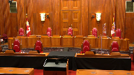
Thank you for granting CFIB the opportunity to present a three-step framework to help decision-makers determine if a rule of separability applies, and if it does apply, what is its content.
Because without a clear framework, it is far too easy to apply the wrong rule of separability.
For the court’s benefit, CFIB’s framework is on page 9, paragraph 36 of its factum, but the three steps are these.
First, identify if a rule of separability applies, and to be clear, separability does not always apply, but if it does apply, first identify the rule’s content.
Second, apply that rule of separability, not some other rule of separability.
A decision-maker must not apply some general rule of separability, as this risks landing on the wrong rule of separability.
And third, if no rule applies, treat the contract and its arbitration clause as non-separable.
By way of background, separability comes in many forms, and the three most common are statutory separability, party-designated separability, and what is probably best described as a general or common law rule of separability.
And to further complicate matters, even inside these different categories of separability, their content can differ.
For example, rules of separability found in statutes may differ from one statute to the other.
Indeed, six Canadian arbitration statutes contain no rule of separability, and within those statutes that do include a rule of separability, the rule varies.
Some are broad, some are narrow, some expressly render the rule of separability optional, while others are silent on this point.
The same is true for arbitration rules coming out of arbitration centers.
Some centers construct the rule broadly by sanctioning separated rules and separating an arbitration clause from both non-existent contracts and invalid ones.
Other centers construct the rule more narrowly.
What’s more, some rules of separability in these arbitration centers expressly leave the rule optional, while others are silent on it.
In short, there is no one rule of separability, and CFIB’s condensed book at page two includes examples of statutory separability and rules from Canadian arbitration centers and international ones.
Thus, the first step in CFIB’s suggested framework requires identifying the right rule.
Now, after identifying this right rule, the second step requires a decision maker to apply that rule.
It should not apply some other version of separability.
Thus, to say that separability always applies or that it applies only if the main contract is challenged for being invalid is not precise.
When a statute or the parties provide a rule of separability, a decision maker should not substitute that rule with another one.
Now, separability does not always apply.
When parties have not selected a separability rule, the question arises whether some general rule of separability should apply automatically.
And here, CFIB cautions that the answer to that question should not be a quick yes.
Crucially, separability is not necessary to make arbitration work.
Admittedly, separability is often found in default statutory rules and this rule of separability may even facilitate arbitration, but fundamentally it is not a mandatory rule.
Parties may opt out from its application.
Consequently, and this brings us to the third and final step of the proposed framework, if a statute does not include a rule of separability and if the parties have not inserted one, a decision maker should not assume separability applies before it first investigates the intention of the parties, the legislator, or both.
And should a decision maker reach the conclusion that there is no separability, then the contract and the arbitration clause should be treated as non-separable.
In closing, CFIB’s framework offers a straightforward approach for when decision makers are confronted with the separability doctrine.
Those are CFIB submissions and I thank the court for its time.
Justice Wagner (01:28:16): Thank you very much.
The court will take its morning break.
15 minutes.
Thank you.
Justice Côté (01:28:24): The Court.
Justice Wagner (01:28:30): Thank you.
Kelsey Meyer.
Speaker 8 (01:28:39): Good morning Chief Justice, Justices.
We act for the respondents Petro-West Corporation and its affiliates, all of which are in receivership.
I’ll refer to those as the Petro-West respondents and the court appointed receiver thereof, Ernst & Young Inc.
It is the receivership that gives rise to the main issue on this appeal.
Should a court appointed receiver whose court ordered role and statutory purpose is to maximize recovery of assets of insolvent debtors and then distribute them to creditors be bound by arbitration clauses in contracts entered into, not by the receiver, but by the debtors prior to the receivership.
The result of which would be that funds collected by the receiver that would otherwise go to the creditors would instead be used to fund multiple arbitrations.
And where there is no prejudice to the appellants who have already undertaken to defend the litigation.
In fact, the chambers judge pointed out that the appellants concede that it is very likely that arbitration under the agreements will entail multiple proceedings with attendant practical challenges and increased cost.
That is at tab one of our condensed book, it’s paragraph five of the chambers judges decision, the last sentence.
And at paragraph 56, the chambers judge held the parties agree that overriding the arbitration clauses would promote the efficient and inexpensive resolution of their dispute.
A single judicial process will be faster and less expensive than four arbitrations and a possible court case.
No one has suggested that the issues are not appropriate for judicial determination.
The appellants and their submissions this morning, say that the chambers judge assumed that arbitration proceedings would be a fit inefficient.
In fact, the appellants conceded that that point, and the judge made a finding a fact on that the appellants have not appealed that finding.
Considering the appellants conceded this point, one can only infer that their appeal of the lower courts decisions are tactical measure to dissuade the receiver of the insolvent Petro West respondents from pursuing the claims against the appellants.
Back to the main issue on this appeal, we say the answer in this case is no, as a matter of statutory interpretation, and as a matter of law, the decisions of the chambers judge and of the appellate court were correct and the result in each case, and resulted in a harmonious interpretation of federal and provincial legislation.
We submit that the correct approach to be taken by the court in determining whether the litigation should be stayed in favor of arbitrations in this receivership context is for the court to apply a case by case analysis in consideration of the facts, the legislation, which is the bankruptcy and insolvency act and the arbitration act in this case, the policies purposes and objectives of that legislation, including the purposes and objectives of a receivership and the jurisprudence and authorities.
And further, that is the approach that the chambers judge took in this case.
Justice Côté (01:31:39): So, Ms. Meyer, you said that both decisions, the…
Justice Côté (01:31:44): BCSC Court and the Court of Appeal are right in the result, so implying that you may disagree with the reasoning.
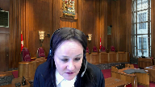
So the Court of Appeal decided that the receiver was not a party because of some sort of an implicit disclaimer.
So do you still contest that you were not a party to the arbitration, the receiver was not a party to the arbitration agreement, or your argument is more centered on the power of the bankruptcy court to set the arbitration agreement, to declare the arbitration agreement inoperative?
Speaker 8 (01:32:26): Thank you Justice Cote.
We submit that this appeal can and should be dismissed on any of the following grounds which I will address in my submissions.
To outline them at the outset, first the court has the statutory jurisdiction under sections 183 and 243 of the Bankruptcy and Insolvency Act which we’ll refer to as the BIA to find that the arbitration clauses in issue are inoperative or incapable of being performed.
This is consistent with section 15 sub 2 of the Arbitration Act and thus this approach results in a harmonious interpretation of federal and provincial legislation.
Second, we say the Arbitration Act is not engaged for three reasons.
First, that the appellants have taken a step in the litigation proceedings by undertaking to defend the claim and agreeing to defend the claim and therefore pursuant to section 15 of the Arbitration Act they cannot apply to stay the litigation.
I will speak to our position on this only briefly today as I recognize that the other grounds are likely of more interest to this court.
The condensed book of the respondents includes at tab 5 the Wriglin affidavit.
Exhibits j to o of that affidavit are correspondence between council including at exhibit j a letter from council for the appellants to me as council for the respondents saying we undertake to file a defense in due course.
We propose October 31st as a date.
Further correspondence was entered into and entering into an agreement to defend in consideration for an extension of time to do so.
We submit with respect to this ground that the chambers judge erred in law in finding that the appellants undertaking to file a defense did not constitute a step in the proceedings because the appellants did not rely on or invoke the rules of court and that as she said there is no evidence that the plaintiffs would have acted differently if the letter had not contained an undertaking and it simply stated that the defendants will file a defense by a certain date.
Those considerations are not part of the test.
The test is whether the appellants took a step in the proceedings.
Justice Jamal (01:34:32): policies, presupposes that they’re bound by the arbitration agreement though, but so going back to Justice Cote’s question, what is the, maybe just to tell it, tell me what the answer I’m interested as well, that would be of help.
Speaker 8 (01:34:47): Yes and certainly going to the other points on which we say the appeal can and should be dismissed, we say that the receiver is not bound by contracts of a debtor unless the receiver has adopted or performed the contracts and that has not happened here and so the receiver is not bound by the contracts in issue including the arbitration clauses therein.
Seeking recovery of funds owed on a contract does not constitute adoption or performance of a contract and we submit that the BC Court of Appeal did error in deciding otherwise on that point.
Speaker 3 (01:35:17): Can I just ask for a precision in terms of your first submission, in terms of the jurisdiction under the BIA, do I take it that you’re making that argument, regardless of whether or not Ernst & Young is seen as a party under the Arbitration Act?
Speaker 8 (01:35:33): Yes, thank you Justice Martin.
I agree with that in that regardless of whether Ernst & Young in its capacity as receiver is a party to the arbitration agreement or is otherwise bound by the arbitration agreement, we say the court has the statutory jurisdiction or the alternative the inherent jurisdiction under Sections 183 and 243 of the BIA to…
Justice Moldaver (01:35:55): what I wanted to ask you.
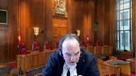
Do the two combine here?
Because the judge in British Columbia was not the bankruptcy court, really, if I understand this correctly.
That was in Alberta.
So I’m just wondering whether the two sections together give the judge in British Columbia the authority.
Because under 183, the judge in BC had this kind of overriding, you know, original jurisdiction, ancillary, et cetera, et cetera.
Overlapping speakers (01:36:35): So, perhaps…
Justice Moldaver (01:36:36): Perhaps that’s how she got the authority to be dealing with this issue in the context of what was an action that on its face was just a civil action between the two parties.
Speaker 8 (01:36:49): Justice Moldaver, again that does tie to Justice Cote’s question.
We agree that the Chambers judge had the jurisdiction under section 183 and section 243 to make the decision that she made.
She found that she had the inherent jurisdiction to find that the arbitration agreements were inoperative or incapable of being performed.
That is at paragraphs 49 and 60 of her decision.
Justice Brown (01:37:18): Insolvency Act doesn’t speak at all about inherent jurisdiction, it speaks about original jurisdiction.
So if she’s invoking inherent jurisdiction, then she must be understanding it in the common sense, which is really, it’s a procedural power that flows from your status as a court in order to carry out your powers as a court.
How on earth can inherent jurisdiction confer jurisdiction under a statute?
Speaker 8 (01:37:43): Justice Brown, I submit that in the chamber’s judge’s decision, as well as a number of the other decisions that we rely on in this case, including Wedgmount and Pope and Talbot, that the court indicated that it was relying on its inherent jurisdiction, but in fact, the court actually had statutory jurisdiction under section 243.
And I submit that because, as is set out in the article of Justice Jackson of the Saskatchewan Court of Appeal, and Professor Janice Serra, they referred to a hierarchical approach to be taken by the courts in exercising their statutory jurisdiction first, and then looking to inherent jurisdiction.
Justice Brown (01:38:27): Well, my question is, I mean, can you ever look to inherent jurisdiction to answer this question?
I fail to see how, but maybe my understanding of inherent jurisdiction is impoverished.
Speaker 8 (01:38:39): Justice Brown, I submit that in Eagle River, Justice Binnie, this is at tab eight of our condensed book, paragraph 77, said that the BIA prima facie establishes one command center or single control for all proceedings related to the bankruptcy and that that was pursuant to section 183 of the BIA.
And so there’s that jurisdiction set out there.
With respect to inherent jurisdiction, there are a number of cases that support the application of inherent jurisdiction here, as I’ve mentioned, including Wedgmont and Pope and Talbot, and a view of the hierarchical approach and the broad statutory jurisdiction pursuant to section 243.
I submit that it isn’t, it wasn’t in those cases necessary for the court to rely on inherent jurisdiction as it had statutory jurisdiction.
Turning to statutory jurisdiction.
May I just ask you, Ms. Maier, before you continue? Yes.
Thank you for your time, and thank you for your time, and thank you for your time, and thank you for your time, and thank you for your time, and thank you for your time, and thank you for your time, and thank you for your time, and thank you for your time, and thank you for your time, and thank you for your time, and thank you for your time, and thank you for your time, and thank you
Justice Jamal (01:39:34): What is the statutory basis for the receivership order?
Is it 243 sub 1 alone or is it 243 sub 1 and 183 sub 1?
Speaker 8 (01:39:46): Justice Jamal, the statutory basis for the Receivership Order is Section 243 sub 1 alone.
That being said, Section 183 creates jurisdiction and specifically Sections 1C and D creates jurisdiction in the Alberta Court of Queen’s Bench and also the B.C. Supreme Court as bankruptcy courts.
And so through the point that had been raised with counsel for the appellants about whether, I believe it was Justice Cote raised this, whether the court or rather the receiver should apply to the Alberta Court of Queen’s Bench for a declaration that the arbitration clauses are inoperative or incapable of being performed before proceeding to sue.
I submit that the receiver certainly could have done that, but that the B.C. Supreme Court had the jurisdiction under Section 183 to act as a bankruptcy court.
And in fact, as a parent from Justice Iyer’s Chamber of Justice decision, that is in fact what she did.
Justice Jamal (01:40:45): Maybe at a later point, you don’t have to answer this now, but at some point, if you could tell us why you need inherent jurisdiction at all, if you have 243.1c, the power to take any action the court considered advisable, and the specific terms of this receivership order, why isn’t that sufficient?
Speaker 8 (01:41:03): Justice Jamal, I submit it is sufficient that the court has broad statutory jurisdiction under Section 243.
Section 241-31A is included at tab three of our condensed book, as are all the other BIA provisions we intend to refer to.
That section expressly authorizes a court to appoint a receiver to take possession of accounts receivable of an insolvent person and pursuant to Section 243-1C to take any other action that the court considers advisable.
In that regard, the DGDP-BC Holdings and Third Eye Capital Corporation, which is a 2021 decision of the Alberta Court of Appeal included at tab six of our condensed book, states at paragraph 20 that the court’s residual statutory jurisdiction under the very wide wording of Section 243-1C of the BIA has been interpreted to give supervising judges the broadest possible mandate in insolvency proceedings to enable them to react to any circumstances that may arise.
In the Insolvency Institute of Canada’s Factum, they include the Sam Babe article.
We’ve included an excerpt of that at tab seven of our condensed book.
Babe states, courts have generally held that Section 243-1 of the BIA alleviates any need to resort to inherent jurisdiction in the receivership context as it allows courts to authorize any action by the receiver that it considers advisable.
And in that regard, that decision refers to the decision of the Ontario Court of Appeal in 2019 in Business Development Bank of Canada and Astoria Organic Matters.
Justice Moldaver (01:42:41): Just to be clear, sorry to interrupt you, but we’ve been using the term the supervisory judge, which has its own connotation usually in these matters, but I take it your position is a combination of 183 and 243, and bearing in mind that it’s your opponents that moved in the British Columbia Court, Superior Court, to have the stay of proceedings.
So, I have trouble thinking that it lies in their mouth now to say that that judge didn’t have the authority to do what she did, but I guess really the point here is that Justice Iyer was taking on a supervisory role to a certain extent, given that this was brought before her by the other side.
And I don’t know that anybody complained that she could not look into the Bankruptcy Act and so on because this was just a civil action, a normal civil action.
Do I have that right or what?
Speaker 8 (01:43:46): I agree, Justice Moldaver, in that Justice Iyer, the chambers judge, did take a supervisory role as the BC Supreme Court has jurisdiction pursuant to Section 183, sub one of the BIA, and that she exercised that jurisdiction.
While she states she exercises on the basis of inherent jurisdiction, I submit that based on the broad jurisdiction under Section 243, that it was unnecessary for her to actually rely on inherent jurisdiction, and that what she was actually exercising was her statutory jurisdiction.
As was also the case, I submit in the wedge-mount decision, which we refer to in our authorities.
Turning briefly to that wedge-mount decision, and again, I note also that the hierarchical approach is set out by Justice Jackson and Janice Sarah in their article, but also that they note that courts often confuse inherent jurisdiction and statutory jurisdiction.
That is included in our condensed book as well, and it’s pages one to three of that article that are included there.
With respect to the wedge-mount case, there are a number of cases that do indicate that the court is relying on inherent jurisdiction.
The wedge-mount case is one of those cases that we’ve referred to.
Other cases that we refer to in support of our position are the Alberta Court of Appeals decision in Smokey River Coal, where the Court of Appeal held that arbitration is a proceeding that can be stayed under Section 11, sub four of the CCAA in that case.
Here in this receivership, there is also a stay of proceedings, and the appellants have not applied to lift that stay.
We refer also to Hayes Forest Services.
Excerpts of that are at tab 15 of our condensed book.
There, the court found that it had jurisdiction to override an arbitration clause where just judicial resolution of the dispute was less expensive and more expeditious than arbitration.
We also refer to reliance insurance.
This is at tab 16 of our condensed book.
There, in the context of winding up and restructuring proceedings, where a stay of proceedings had not been lifted, the court found that the agreements to arbitrate ceased to have effect and were unenforceable.
They were inoperative.
The court noted the object of the statute in that case is expeditious and inexpensive winding up, noted the delay associated with the arbitral tribunals, and that a multiplicity of litigation that adds unnecessary costs and depletes what would otherwise be available to distributed creditors should be discouraged.
In this case, as I’ve said, there is a stay of proceedings that stays the appellants from exercising rights to arbitration, and they have not applied to lift it.
My friend, Mr. DeGroot, took you to the receivership order in the Riglin affidavit.
An excerpt of that is at tab five of our condensed book, and I would ask the court to turn specifically to paragraphs eight and nine of the receivership order.
It, again, is at exhibit A of the Riglin affidavit.
In particular, while Mr. DeGroot has taken the court to paragraph eight, I would submit that paragraph nine is also important for the court to take a look at, in that what paragraph nine states, with the heading, no exercise of rights or remedies, all rights and remedies, including without limitations, set off rights against the debtors, the receiver, or affecting the property, are hereby stayed and suspended except with the written consent of the receiver or leave of this court.
Justices, the appellants have not applied to lift the stay of proceedings.
On that basis, we submit that, in fact, the appellants have no capacity to require arbitration in that they are stayed from enforcing the arbitration clause.
Justice Cote, you had referenced this in your questions to the appellants.
We note, as well, that the Petro-West respondents themselves also do not have capacity to enforce the arbitration agreements as a result of the receivership.
Because of the receivership, the Petro-West respondents have no authority or capacity to act.
The directors and officers of those entities have no authority to act.
The receiver has exclusive authority, and this is included in the latter sentence of paragraph three at the end of all the subsections of the receivership order.
The Petro-West respondents themselves are incapable of performing the arbitration agreements.
And further to that point, the appellants are also incapable of performing the arbitration agreements in the circumstances where they have not applied to lift the stay of proceedings against the Petro-West respondents as a result of the receivership order.
The appellants thus have no capacity to assert any rights or enforce any rights of arbitration.
In the appellants’ condensed book at tab 22, they’ve included an article by Julian Ellis that’s entitled A Comparative Law Approach, Enforceability of Arbitration Agreements in American Insolvency Proceedings.
At page 147 of that article, Ellis confirms the necessity of applying to the bankruptcy court to lift the stay of proceedings and insolvency proceedings before proceeding with arbitration.
Justice Côté (01:49:12): Miss Meyer, I just want to ask you a question about the receivership order.
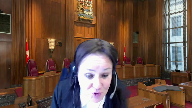
You say that the receiver does not have the capacity, but if I look at, for instance, section 3F, to exercise all remedies of the debtors, so Petro West can exercise, or the receiver in the shoes of Petro West, can exercise all the remedies which were available to Petro West, including to sue, to collect the money, and if the receiver would have decided to arbitrate that debate.
I don’t understand why you are saying that the receiver did not have the capacity to do that because of section 9 of the receivership order.
Speaker 8 (01:49:55): In fact, Justice Cote, that isn’t what I’m saying.
I’m saying the receiver is the only entity here that does have any capacity to act.
I think it’s…
Justice Côté (01:50:04): It’s not, it is not disputed that the receiver is the one who is mandated, mandated by the receivership order to take the proceedings, does not mean that he is the one who should decide if it should be arbitration or a civil, civil claim.
Speaker 8 (01:50:21): Justice Cote, to that point I submit that in the circumstances where the appellants have brought an application to stay the litigation in favor of arbitration that it was appropriate that the courts make the decision as to whether it should be arbitration or litigation and that the chamber’s judge to your earlier question of what parts of which decisions do we agree with properly exercised her jurisdiction although we say she could have exercised her statutory jurisdiction not her inherent jurisdiction in determining that in this particular case it wasn’t necessary that the litigation should not be stayed.
Justice Moldaver (01:51:01): Thanks for watching!
Overlapping speakers (01:51:01): I’m a bit confused, I apologize.
No, go ahead.
Justice Moldaver (01:51:04): But you took us to paragraph 9 of the order, and I’m just trying to understand what it is that you’re saying about that.
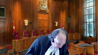
Are you saying that the appellants had no right to bring this case before a judge against the receiver?
Because the receiver had started the claim, right? Right.
Overlapping speakers (01:51:31): That’s correct.
Justice Moldaver (01:51:31): in the courts.
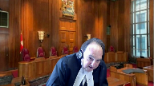
So are you saying that this whole thing required leave of the court to begin with before any application could be brought to prevent the receiver from proceeding in the form that it wanted?
I’m just trying to understand what you’re using nine for.
Speaker 8 (01:51:51): Thank you Justice Muldaver.
I submit that, first of all, the receiver commenced the action in the British Columbia Supreme Court, the appellants then applied to stay the litigation in favor of arbitration.
In that circumstance, we say that pursuant to paragraph nine of the receivership order, the appellants are stayed from going to arbitration without first seeking leave of the court to do so and they haven’t applied to lift the stay of proceedings.
The Ellis article I referred to specifically references the fact that you have to actually apply to lift the stay of proceedings.
Justice Rowe (01:52:27): Which, this is more than a mere technicality, it seems to me, who needs to go to court to seek what directions, right?
In other words, in the proper rolling, carrying forward of these matters, was it incumbent properly on Petro West or Peace River Hydro to say to, or the Alberta judge, we’re asking for you to make an order saying that we’re not bound, but that the arbitration agreement is inoperative, and therefore we’ll go forward with a court proceeding, or was it open to Peace River to proceed without first seeking directions?
Speaker 8 (01:53:19): Justice Roe, I think there might be a mix up there between Petro West Corporation and Peace River Hydro Partners, so I’ll just use appellants and respondents.
But to that point, we admit that we agree that the respondents, being the receiver, could have applied to the Alberta Court of Queen’s Bench to seek a declaration authorizing it to proceed with litigation rather than arbitration at the outset.
But having not done so, that the BC Supreme Court did have the jurisdiction under section 243 sub one, or the alternative, the inherent jurisdiction to find that the arbitration agreements were inoperable or incapable of being performed and that the stay of the litigation should not be granted.
However, what I’m also saying is that at the same time that the appellants, Peace River Hydro Partners, were applying to stay the litigation, it was also incumbent on them to apply to lift the stay of proceedings in the receivership.
And that’s where paragraph nine of the receivership order comes into play because that paragraph stays all rights and remedies of any party, including the appellants.
Did you say-
Justice Côté (01:54:33): that to the judge in BC and saying wait a minute Madame Justice your sales with here an application to stay a civil claim but they did not ask an order according to section nine under receivership order or is it a new argument you are making today
Speaker 8 (01:54:49): Justice Côté, it wasn’t an argument that was specifically made before the BC Supreme Court.
However, this court, or rather the appellants, in the course of their submissions have raised issues with respect to party autonomy.
And to that point that then goes to whether the receiver is a party to the arbitration agreements.
That in turn leads to the question of whether the arbitration agreements are inoperative or incapable of being performed.
And so in response to the submissions of the appellants, we say that the Petro-West respondents themselves do not have any capacity to enter into arbitration because they have no capacity at all.
Their directors and officers have no capacity.
We say that the receiver is the only party that has exclusive authority to act on behalf of the Petro-West respondents.
And with respect to the appellants, which are the defendants to the action, we say that they would have had to have applied to lift the stay of proceedings before they could have proceeded to seek to stay the litigation in favor of arbitration.
Now they might have done that all at the same time, but they didn’t do so.
Justice Rowe (01:56:01): All right, my apologies a moment ago for confusing things.
But just to say, there’s a couple of ways of understanding what you’ve said, but it seems to me the implication is that as of the granting of the receivership order, that had the effect of causing the arbitration agreements to become inoperative.
Is that how it operates?
Speaker 8 (01:56:39): No Justice Roe, by no means are we saying that in every situation where a debtor is a party to an arbitration agreement that the arbitration agreement is inoperative or incapable of being performed.
What we are saying is that the court should engage in a case-by-case analysis in any such case and consider the legislation as well as the facts and the purposes and objectives of the legislation and that the court did so in this case as is evident from the chamber’s judge’s decision at paragraph 60 and that that was the appropriate approach and that in consideration of the concession by the appellants that multiple arbitrations in this case would entail multiple proceedings with attendant practical challenges and increased costs that it was appropriate that the court exercise its jurisdiction and deny the stay of the litigation proceedings.
Overlapping speakers (01:57:40): I admire you.
Justice Rowe (01:57:40): One more time, because I understood you to say at the end that in the circumstances of this case, this was an appropriate exercise of discretion.
My point was, once the receivership is granted, on which party is it incumbent to act?
In other words, if the non-receiver party says, we want to go to arbitration, do they have to go to court and say to the application judge or the supervising judge, we wish to proceed to arbitration?
We wish to exercise that right.
And we’re coming before you because your stay has blocked us.
That’s, I guess, what I was asking.
Speaker 8 (01:58:31): Yes, and I agree with that, Justice Roe.
That application could have been made at the same time as the application under Section 15 of the Arbitration Act to stay the litigation in favor of arbitration.
Justice Kasirer (01:58:43): But Mrs. Meyer, you’d be happy to concede at your end that in another case where the appellants hadn’t made their concession, had there not been a finding of fact, that arbitration, even in a bankruptcy setting, might turn out to be an efficient way for not only in respect of party autonomy, but also in respect of the objectives of the bankruptcy and insolvency act.
Speaker 8 (01:59:12): Yes, that’s correct, Justice Kassir.
I submit that there may be circumstances where it would be appropriate for a receiver to engage in arbitration.
And to that point, I wanted to speak briefly with respect to arbitration policy and also the policy with respect to bankruptcy and insolvency.
From the insolvency perspective, the purpose of a receivership, as is confirmed by Section 243 of the BIA, is for a court-appointed receiver who is an officer of the court with the power to act nationally, to exercise its court-ordered exclusive authority, but also its duty to receive and collect all of the assets, including accounts receivable of the insolvent debtor, and then to distribute the proceeds of those assets to the debtor’s creditors.
The receivership order expressly authorizes the receiver to bring litigation in the name of the debtor to fulfill that obligation.
And because the goal is to maximize recoveries to the creditors of the insolvent debtor, that in turn requires that the receivership be efficient and fair to all stakeholders.
The single control model, which I’ll speak to, reflects that purpose.
But turning then to policies with respect to arbitration, Justice Cote, in the Uber case, you held that concepts of party autonomy, legislative intent, commercial practicalities, and freedom of contract ought to be taken into account.
There is, I submit, no issue of party autonomy or freedom of contract here in that the receiver did not enter into any of these contracts and is not a party to them, nor is it bound by them having not adopted or performed them.
Well, because I’ve just-
Speaker 3 (02:00:53): addressed.
Okay I’d like to get to the not bound that that particular portion of your argument.
Certainly.
I think that it’s an argument can be made that in seeking to enforce payment under even an executed contract that the receiver is somehow confirming the contract so that would be point number one I would ask you to address and my related point on that is that it’s clear here that as you as you argue that the performance obligations have been completed but for payment.
We’re sitting here trying to come up with a general rule and is it really an appropriate basis to say something is executory and therefore will be subject to different rules to contracts that are somehow performed in what in totality substantially.
I mean the differentiation between contracts based on where they are in the progression of performance doesn’t seem to be a good and principled basis on which to say whether or not they’re being affirmed, abandoned, disclaimed, whatever.
Speaker 8 (02:02:07): Thank you, Justice Martin.
With respect to the first question, the law and authorities which we’ve included in our factum at paragraphs 59 and 80 to 81 confirm that suing to recover money owed on a contract does not constitute adopting or performing a contract.
Collecting outstanding accounts receivable is part of the receiver’s court authorized duties, it does not mean that the receiver is bound by the contract giving rise to the accounts receivable.
Once an obligation to make payment on a contract has accrued, it remains enforceable, even after repudiation due to breach or disclaimer.
That is a principle of basic contract law, as set out by Fridman and Wadhams in their texts, which we’ve included in our factum.
And so in this case, there has been a breach of the contracts in that the appellants have not paid for the services and work provided by the Petro West respondents.
The receiver has a court ordered duty to collect accounts receivable that are owed to the Petro West respondents.
And so in doing so, it is not adopted or perform the contracts.
It would be an absurd result if by carrying out its court ordered duty to collect accounts receivable that the receiver therefore was deemed to be bound by all contracts of a debtor on which accounts receivable were owed.
That’s my address.
Justice Côté (02:03:32): Paragraph.
Justice Karakatsanis (02:03:32): Can I just, well, I was just gonna follow up on that same point, because if a debtor who sues on, sorry, if the receiver sues based on the debtor’s contractual right doesn’t amount to adoption of the contract, what circumstances would that entail?
Does it mean that as long as the receiver has not performed any part of the agreement, is that a prerequisite before the receiver is considered to have adopted the contract?
Speaker 8 (02:04:06): Thank you for the question Justice Caricatsanis.
In terms of adopting or performing the contract, I will use this case as an example, the contracts and issue involve the Petro-West respondents providing services and materials to the Peace River Hydro partnership.
And so, if there were remaining obligations to provide services or materials by the Petro-West respondents and the receiver had determined in looking at the contract that it could bring more money into the estate by continuing to perform the contract, and thus did so and continue to carry on the contract, then the receiver would have adopted or performed the contract.
That didn’t occur in this case because as the appellants have admitted that paragraph 100 of their factum, there was nothing remaining to be performed.
Justice Côté (02:04:55): So, Miss Meyer, when the Court of Appeal says in paragraph 55 that in the factual situation we are dealing with here, it is open to the receiver to disclaim the arbitration agreements, notwithstanding that it has adopted the containing contracts for the purpose of suing on them, so do I understand that you disagree with that proposition of the Court of Appeal?
Speaker 8 (02:05:20): Justice Cote, yes, I disagree with the finding of the BC Court of Appeal that the receiver has adopted or performed the contracts by suing on them.
Justice Côté (02:05:31): and when the Court of Appeal says that you have this claim, at least implicitly, the arbitration agreement, are you pretending before us today that there was any disclaimer here?
Justice Cote, you’ll have seen at Appendix B to the… Yeah.
Speaker 8 (02:05:49): Yes, the appellant’s factum that we’ve conceded to the BC Court of Appeal that we have, that the receiver has not disclaimed the contracts nor the arbitration clauses therein.
That being said, with respect to the application of the doctrine of separability, if the court looks at the arbitration clauses as separable and considers the conduct of the receiver, and certainly the courts have held and the law is clear that the conduct of the receiver can be taken into account with regard to whether a receiver has adopted or performed or disclaimed a contract, that by opposing the application to stay the litigation in favour of arbitration, by that conduct, the receiver has implicitly disclaimed the arbitration clauses within the contracts.
That being based on the doctrine of separability applying. Ismael.
Justice Côté (02:06:41): is it really applicable here?
Do we need to consider the doctrine of separability to decide this case?
Speaker 8 (02:06:49): Justice Cote, my submission is no, that the court does not need to consider that.
We submit that the courts can dismiss this appeal on the other grounds we’ve asserted and that there is no need for the court to turn to the doctrine of separability.
However, we do also say that the BC Court of Appeal applied separability correctly.
To begin with respect to the doctrine of separability, it can be applied to preserve the main contract where an arbitration agreement is found not to be valid or enforceable.
The appellants themselves admit this in their factum at paragraphs 81, 82, and 86, and they admit this was also the case in Uber.
At tab 22 of our condensed book, there’s an excerpt of the majority decision of Justices Abella and Roe in Uber and paragraph 96, where they stated, we add that the unconscionability of the arbitration clause can be considered separately from that of the contract as a whole, and then later in that paragraph they continue on.
Further support comes from the severability clause of the agreements in question and the Arbitration Act in question.
And so I submit that the court’s majority decision was supported by both separability and severability.
But also Justice Cote, your dissenting decision at paragraph 224 states, it mentions that the Arbitration Act and the Uncentral Model Law codify one aspect of the doctrine.
That is the preservation of the arbitral tribunal’s jurisdiction to rule on the validity of the underlying contract on the basis that the arbitration agreement is to be treated as a separate and independent contract for such purposes.
But then you state, however, the separability doctrine has wider significance.
More broadly, the doctrine holds that an arbitration agreement is invalidated only by defect relating specifically to the arbitration agreement itself, and not by one relating merely to the underlying contract in which that agreement is found.
Gary Bourne, a leading authority on international arbitration, confirms unequivocally that separability also applies to preserve the validity of the underlying contract, notwithstanding the invalidity, illegality, or termination of an associated arbitration clause.
And that excerpt is at tab 23 of our condensed book.
Thus, we say that the BC Court of Appeals application of the doctrine of separability to examine the enforceability of the arbitration clauses distinct from the rest of the agreements is consistent with the accepted and recognized uses of that doctrine.
Justice Côté (02:09:16): But is it not a fact that separability is intended to safeguard arbitration clauses, not to imperil them?
Speaker 8 (02:09:27): Justice Cote, I would submit that the separability doctrine can be applied in the way that you had indicated at paragraph 224 of Uber and Heller, and also that Mr. Bourne indicates in his authoritative text on arbitration.
But there’s, I submit that is incorrect to indicate that the BC Court of Appeal used the doctrine of separability to find that the arbitration clauses were invalid.
Rather, the BC Court of Appeal used the doctrine of separability to examine the arbitration clause to determine whether they were enforceable.
And then on that basis, on examining them determined that they had been implicitly disclaimed.
Justice Jamal (02:10:10): Miss Maya, may I ask a question?
You pointed to paragraph 9 of the order
and I’d originally thought that maybe it was just belts and suspenders with paragraph 3c of the order but paragraph 9, the first part of my question is paragraph 9 appears to be broader applies both in respect to the debtor and the receiver so whether or not the receiver is party to the agreement, paragraph 9 would apply and then in respect of paragraph 3c it talks about ceasing to perform any contracts of the debtor so if that is broad enough to authorise the receiver’s conduct then it becomes unnecessary to decide, one could say it becomes unnecessary to decide whether the receiver is bound by the arbitration agreement because it certainly has the power to cease to perform a contract of the debtor and then whether it’s party to the arbitration agreement or bound by becomes irrelevant.
Speaker 8 (02:11:07): I agree Justice Jamal.
Thank you for the question.
I don’t have more to add on that.
I agree with what you’ve stated.
I thought perhaps I’d turn back to Justice Martin’s question as to whether a general rule with respect to this appeal is that whether the receiver has adopted or performed the contracts is based on whether it’s an executory contract and in that respect I submit that that is not the case.
Whether the receiver has adopted or performed the contract depends on the conduct of the receiver and so certainly if it’s an executory contract it may be that the receiver has actually executed it and adopted or performed it but that doesn’t mean that there can be an executory contract that the receiver does in fact disclaim or simply hasn’t elected whether to disclaim it or whether to adopt and perform it.
I wanted to just turn to one final point with respect to the doctrine of separability.
Certain of the interveners have asserted that the BC Court of Appeals decision is inconsistent with Article 16 sub 1 of the UNSATRAL Model Law.
Aside from the fact that this appeal involves the Domestic Arbitration Act and the Model Law does not apply the BC Court of Appeal decision does not offend Article 16 sub 1 in my submission.
That section codifies only one aspect of the doctrine of separability is not a complete code of how separability works in all cases.
It does not negate the other applications of separability as Justice Côté you addressed in paragraph 224 of Uber and as Born addressed as well.
Certain of the interveners have noted the potential impact of this case on Canada’s role as a world leader in arbitration law.
I submit there is no reason why this case should have any bearing on international arbitration law or Canada’s role as a leader in that regime.
This case relates to a domestic arbitration statute where the legislature has intentionally limited that statute’s application to parties and to that point I wanted to turn to another aspect of the grounds on which we say that this appeal can be dismissed and should be dismissed.
The Arbitration Act itself by its terms does not extend to persons claiming through or under a party to an arbitration agreement unlike other Canadian arbitration legislation and thus does not apply to a receiver.
The legislative history of the act demonstrates that this was a deliberate decision by the legislature.
Prior to 1986 the BC domestic arbitration legislation included the broad language which bound the act to persons claiming through or under a party to an arbitration agreement.
That through or under language was removed from the Domestic BC Arbitration Act in 1986 at the same time that the through or under language was included in the BC International Commercial Arbitration Act which was enacted for the first time concurrently in 1986.
The removal of the through or under language from the Domestic BC Arbitration Act is presumed to be deliberate and should be given effect.
The appellants include in their condensed book at tab three the Cavert, Steele and Crane Limited and Concord decision.
Before you before you go there
Justice Kasirer (02:14:25): Just as deliberate may be the lack of a reference to sign by the parties.
Are we to make the same inference about that?
I mean, it’s a bit of a wash, the statutory interpretation argument.
You’re right to say that the reference to parties could have been stated differently, but there are plenty of international and domestic examples where sign by the parties was put in there, for example, and it wasn’t here.
So I’m not sure how far we can decide the case on the kind of inference that you’re proposing to us.
Speaker 8 (02:15:07): Thank you, Justice Kasir.
I submit that signed by the parties could potentially be interpreted to impose an additional requirement.
For example, if an assignee had taken on a contract, perhaps there would be an argument that that assignee has not signed the contract that includes the arbitration agreement.
And so in such a case where the statute includes that wording, that the arbitration clause doesn’t apply to an assignee in that case.
My point is that this goes back to the case by case analysis that we submit the court should take in determining whether the receiver should be bound by an arbitration clause in that it requires consideration of the legislation itself, which in this case is the Arbitration Act and the BIA, as well as the purposes and objectives behind that legislation and the facts of the case itself.
Justice Moldaver (02:15:57): you draw a distinction between the receiver and the trustee?
That was one of the first questions the Chief Justice asked you.
Overlapping speakers (02:16:04): Yes.
Justice Moldaver (02:16:04): And if I understood it, somebody was saying that the trustee is actually a statutory assignee.
Where do you stand on that?
Speaker 8 (02:16:15): Justice Moldaver, I think it’s very important to understand the distinction between receivership and bankruptcy on this case and I submit that the appellants haven’t necessarily understood that and so to that point Petro S Corporation is not in bankruptcy so property of a debtor and receivership including the debtors contractual rights does not vest in a court-appointed receiver.
On that basis then none of the assets of Petro S Corporation including contracts and contractual rights have vested in the receiver.
While the Petro S affiliates are in receivership and are also bankrupt, the bankruptcy of the Petro S affiliates is irrelevant to this appeal.
That is because there remain outstanding claims of secured creditors against each of the Petro S affiliates.
As a result and as a matter of law none of the assets of the Petro S affiliates including contractual rights have vested or will vest in the trustee in bankruptcy unless and until all of their respective secured creditors have been paid out in full.
Section 71 of the BIA which is included at tab 3 of our condensed book is subject to the rights of secured creditors and has no application here where the secured creditors have not been paid in full.
Unlike a receivership secured creditors are not affected by a bankruptcy so none of the property of any of the Petro S respondents has vested in a trustee in bankruptcy.
The appellants assert at paragraph 4 of their main factum that courts have long recognized that a party to an arbitration agreement includes among others assignees, agents and trustees in bankruptcy.
That assertion fails to recognize that a receiver is not an assignee or an agent of a party to an arbitration agreement nor is it acting in its capacity as a trustee in bankruptcy.
A receiver is an officer of the court not an agent of the debtor and is a separate legal entity from the debtors and from the trustee in bankruptcy.
In this case Ernst & Young acts both as the receiver and as the trustee in bankruptcy but these are two different legal capacities they cannot be conflated.
A receiver is not a statutory assignee or a successor in interest of a debtor in receivership and the case law that the appellants point to to support their assertion that the receiver is an assignee of a debtor relates to a trustee in bankruptcy as being an assignee of the debtor.
Overlapping speakers (02:18:52): And this is what?
Speaker 3 (02:18:53): I was just going to say
but but would you say then that a trustee in bankruptcy is a party to the arbitration agreement under the Arbitration Act?
Speaker 8 (02:19:05): Justice Martin, I would agree that based on this particular arbitration act that a trustee in bankruptcy would be a party.
That being said, I would submit that the court would still have a jurisdiction potentially under the BIA, although not Section 243 because that relates only to receiverships, to consider whether the arbitration clause should not be upheld.
Justice Côté (02:19:29): So Ms. Meyer, I understand that difference between a receiver and a trustee, but, and this is why I think that the receiver has to exercise the proceedings in the name of the debtors.
So if I go back to the receivership order, it says that paragraph 3F, to exert in connection with the account receivable and the money owed, to exercise all remedies of the debtors.
Is it not the fact that in this case, if we would not have had a receiver, the remedy that the debtor had was to go to arbitration in order to collect the money owed under the contract?
Speaker 8 (02:20:15): Justice Cote, to that point, again, I state that the receiver is not bound by the contracts.
Justice Côté (02:20:23): It’s not my question, but here, how should I interpret all remedies of the debtors?
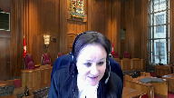
Is it not limited to the remedies which were available to the debtors, and in this case, arbitration?
Forget about the suspension and the jurisdiction, it’s another issue.
But just to decide if the receiver is a party to the agreement, here we say that he can exercise all remedies of the debtors, not different remedies than the ones available to the debtors.
And in this case, there were arbitration agreements.
I’m just talking about that first issue.
Speaker 8 (02:20:59): Thank you Justice Cote and so to that point I note that we don’t say that a receiver can never be bound by an arbitration clause in a contract.
If a receiver has adopted or performed a contract of an insolvent debtor then the receiver is bound by that contract including by the arbitration clause and so this case need not stand for the proposition that a receiver is never bound by an arbitration clause in a pre-receivership contract of the debtor.
But with respect to your point that section 3 says that the receiver can exercise the rights of the parties that doesn’t bind the receiver to those rights.
The receiver’s court-ordered authority as well as its obligation is to collect accounts receivable
and I submit that that does not mean that the receiver is bound by the contracts if it has not adopted or performed them.
Justice Moldaver (02:21:57): a little wrench into this, please.
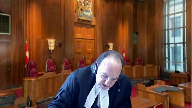
How does section nine of the order, the receiving order, which we’ve talked about, what’s your take on section 72.1 of the Bankruptcy Act in its relation to section nine?
If I could just get you to help me with that.
72.1, the provisions of this act shall not be deemed to abrogate or supersede the substantive provisions of any other law or statute relating to property and civil rights that are not in conflict with this act.
And then it goes on to talk about the trustee can avail him or herself.
But the first part of that, I’m just wondering what your take is on that.
Speaker 8 (02:22:40): Thank you, Justice Moldaver.
With respect to Section 72, we submit that there is no issue of paramountcy and nor is there any conflict with the legislation in that if the Court finds by exercising its statutory jurisdiction pursuant to Section 243 that the arbitration clause is inoperative or incapable of being performed, and such a finding would be consistent with the authorities as to what those terms mean, inoperative, meaning that the Court has ordered that the arbitration clause is inoperative, and incapable of being performed, meaning that there is no capacity to carry out the arbitration agreement, then I submit that there is no issue of paramountcy or prohibition by Section 72 because of the fact that Section 15 sub 2 of the Arbitration Act specifically contemplates the Court making a finding that an arbitration clause is inoperative or incapable of being performed.
So it’s consistent with the Court’s favour of harmonious interpretations of a federal and provincial statute, which is preferred over an interpretation that creates a conflict.
Okay, thank you.
Justice Rowe (02:23:48): I’m going to come back to perhaps a question I’ve asked too many times.
By virtue of what did the arbitration agreement become inoperative?
Speaker 8 (02:24:02): Justice Roe, I submit that that goes to the point of the case by case analysis that should be undertaken by the court and that Justice Iyer of the BC Supreme Court did not undertake.
Justice Rowe (02:24:13): I’m going to insist on this.
Yes, I understand it’s a case-by-case analysis, but did it arise by operation of the receivership agreement, or did it arise only from the decision of the B.C. Supreme Court?
Speaker 8 (02:24:36): If I understand the question correctly Justice Roe, in terms of how did the inoperability or incapability performance arise, I submit that the BC Supreme Court acting in its capacity as a bankruptcy court in the circumstances where this is a national receiver appointed pursuant to section 243 considered all of the circumstances including the cost and inefficiency of multiple proceedings.
Justice Rowe (02:25:07): going to let go of this.
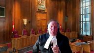
I want a clear answer, and I’m going to ask it again.
I understand that that was the determination, that it was more efficient, that it was a better approach, but is it rendered inoperative by virtue of the receivership order or by the determination made by the V.C. Supreme Court judge?
Speaker 8 (02:25:35): Thank you, Justice Roe, and my apologies that I didn’t understand the question properly prior to this.
I submit that it was as a result of the chamber’s judge’s decision that the court determined that the arbitration clauses are inoperative or incapable of being performed.
Overlapping speakers (02:25:51): and the source of their authority was statutory.
Speaker 8 (02:25:53): The source of the authority was statutory jurisdiction under section 243 and also section 15 sub 2.

There is no contravention of legislative will.
We submit that in the alternative the court have also had the inherent jurisdiction.
Thank you Justice Brown.
I’m confused now Miss Maia because I don’t know what you’re talking about.
Justice Jamal (02:26:16): I’d understood what you said.
It was that in response to my questions, was that it was a result of the decision of the receiver to cease to perform a contract of the debtor under 3C, which was granted under statutory power and the receipt terms of the receivership order.
So it’s the decision of the receiver that results in it being an operative that may be ratified by the court on a motion to refer the matter to arbitration.
But actually, it’s the decision of the receiver, but then ratified by the court in saying, I’m not going to send this to arbitration because it’s an operative.
And quite apart from whether that matter is even proper properly before the court in view of Article 9.
Speaker 8 (02:27:05): Justice Jamal, thank you for the question.
I submit that the Court can dismiss this appeal on any of the grounds that I’ve asserted and that if it refers to the doctrine of separability and examines the arbitration clauses in issue separately from the rest of the contracts and finds that by its conduct the receiver has disclaimed those arbitration agreements by opposing the application to state the litigation that on that basis that yes I suppose it’s the receiver in fact that’s disclaimed the arbitration agreements but on the basis of the exercise of statutory jurisdiction it’s the Court that makes that determination consistent with its statutory jurisdiction under section 243 but also section 15 sub 2 of the Arbitration Act.
To sum up my submissions justices we say that this Court should not permit section 15 of the Arbitration Act to preclude the receiver from following what the appellants concede is the most efficient process to resolve the claims for outstanding accounts receivable where the receiver’s court-ordered duty is to collect assets of the debtors in the most efficient manner possible so as to maximize recoveries to the creditors.
This isn’t about accommodating the receiver’s preference for litigation over multiple arbitrations or convenience as the appellants assert.
It is a proper exercise of the Court’s residual statutory jurisdiction or in the alternative inherent jurisdiction under the BIA in consideration of the facts the purpose of a receivership and of the BIA and the interests of all stakeholders and is consistent with the Court’s jurisdiction under section 15 of the Arbitration Act.
We submit the correct approach as a case-by-case analysis as I’ve said I submit that this appeal should be dismissed with costs of this and the proceedings below against the appellants.
Thank you.
Those are my submissions.
Justice Wagner (02:28:53): Thank you, Miss Meyer.
Kibben Jackson.
Speaker 9 (02:28:59): Chief Justices of the Court, I’m appearing today for the Insolvency Institute of Canada or the IIC.
It has a mandate among others to safeguard the efficacy of Canada’s insolvency regimes and it’s that mandate which is the basis for the IIC’s seeking leave to intervene on this appeal.
And at the outset to be clear the IIC has not said and will not say that arbitration has no place in the context of insolvencies.
As has been said by at least one of my friends today, often the interests proceeding with arbitration are harmonious with the objectives of insolvency proceedings and the act itself which is efficient and timely and less costly dispute resolutions.
The IIC however is concerned to confirm the court’s jurisdiction to oversee and direct their own proceedings and that’s to facilitate the expeditious and efficient and economical administration of estates and we say
that in appropriate circumstances that includes the authority to override otherwise valid arbitration clauses.
The IIC doesn’t take a position on the outcome of this appeal.
Overlapping speakers (02:30:10): Okay.
Speaker 9 (02:30:10): Its position is more consistent with the decision of the Chambers judge, Justice Eyre in this case, though we differ with respect to the source of the court’s jurisdiction.
Her Ladyship described it as inherent jurisdiction and we say that’s properly described as statutory jurisdiction.
What I would like to do, perhaps having heard some of the questions with the benefit of that today, I would like to explain how the IIC submits that these matters should be resolved in the ordinary course and to the extent that it’s ordinary in the context of an insolvency.
The party that wishes to proceed with a claim in the face of an arbitration proceeding should, in our view, appear before the supervising insolvency court for directions if, on the one hand, if the party is not the receiver, not the trustee of its claimant, if it’s a creditor and it wishes to proceed with arbitration, it would need, as has been suggested, to have the stay lifted to permit that.
And that application to lift the stay to permit that should be brought to the supervising insolvency court.
On the other hand, if a receiver or a trustee wishes to proceed with a claim in the civil courts or otherwise, but not by way of arbitration in the face of an arbitration agreement, that application should similarly be brought by the court’s officer to the supervising insolvency court for a determination as to whether the arbitration agreement should be upheld in the context of those proceedings, which will be determined on a case-by-case basis, again, with a view to the competing policy considerations.
And we accept what has been said and included by the chambers.
Oh, I’m sorry, yes.
Justice Côté (02:31:52): I’m sorry, Mr. Jackson.
And this is because that procedure that you described that the receiver should follow, I mean, to file a motion for directions because he is facing an arbitration agreement and he wants to take a lawsuit, a civil lawsuit, it is because the issuance of a receivership order does not automatically render the arbitration agreement inoperative.
Speaker 9 (02:32:17): So I accept that and I agree and with my friend Ms. Meyer and I think that’s in response to Justice Roe’s question.
Overlapping speakers (02:32:23): My eyes.
Speaker 9 (02:32:24): the IIC would not submit that the issuance of a receivership order per se renders inoperative that agreement or any, and in fact a bankruptcy would not have the same effect necessarily.
And so that would have to be determined by the supervising insolvency court whether that agreement should be honored or rendered inoperative, yes.
And so we accept what has been suggested by the chambers judge and by other councils today is that it would be an exercise of jurisdiction by the court, which would be exercised in, I think, I’m not sure if the term was exceptional circumstances, but it would have to be circumstances which clearly dictate that proceeding with an arbitration would frustrate or be contrary to the objectives of the BIA such that it would interfere with the efficient administration of the insolvency estate.
Justice Côté (02:33:13): Mr. Jackson, I have another question because Ms. Myers says that the authority to do that, I mean to stay in arbitration agreement, let’s say, is in Section 15-2 of the Arbitration Act and Section 243 of the Bankruptcy Act, and alternatively she says 183.
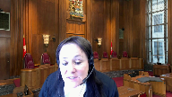
You say in your factor that it is both 243 and 183.
Do you have a preference for one or is it the two provisions?
I just want to know your opinion on that.
Speaker 9 (02:33:44): Well 183 I think is more general in the sense that it would apply to the act in the context of both or frankly in any of the scenarios which might arise under that act which could be a bankruptcy, it would be a receivership, it would include proposal proceedings under the act and so those would be the sort of several heads that arise.
Section 243 is specific to receiverships of course national receiverships and the language in both 183 and 243 is broad.
It is in our view they are they overlap to the extent it applies to receiverships in direct answer to your question Justice Cote.
Overlapping speakers (02:34:19): Thank you.
Speaker 9 (02:34:19): Thank you.
And I think, having explained our views as to how these matters would proceed, I’d just quickly like to touch on a little bit more about the court’s jurisdiction.
With the limited time I have, I’m going to touch on the very broad jurisdiction conferred on courts under the BIA.
It is statutory jurisdiction.
It is informed by the remedial objectives of the Act, and I can only commend the court to the decision in this court’s decision in Sam Levy and ASCO Mining, which is at tab five of the condensed book, and specifically it would be paragraph 38 of that, which just discusses that it’s necessarily broad to ensure the objectives are met.
And that is specifically in reference to section 183 sub one.
With respect to subsection, or sorry, section 243 and the appointment of her national receiver, that section hasn’t been given any particular consideration by this court.
It has by the Ontario Court of Appeal recently in Dianore, which commented that its view was that section 243 conferred an equally broad jurisdiction, particularly considering the language, the open-ended language at the end of section 243.1c, which confers on the court the authority to authorize a receiver to do that which is advisable, and it couldn’t be broader put.
The court in Dianore, which again, I would commend that decision to the court, is fairly good about explaining the history of that.
It points out, in fact, and this is perhaps in some defense of Justice Iyer, who relied on inherent jurisdiction, I think properly speaking, Her Ladyship, or Justice Iyer in that case, was speaking about statutory jurisdiction, and the two terms are often used interchangeably, I think incorrectly, of course, but in relative terms, it’s only I think in recent years, perhaps I’m aging myself a bit, to say that the distinction between statutory jurisdiction and inherent jurisdiction in the context of insolvency proceedings has been properly understood.
And if you look at the Dianore case, the court there makes the same sort of defense of Justice Farley and his decision in the Cura matter, which is also in our materials where he refers to inherent jurisdiction in relation to section 47 in the interim receivership.
And so it is statutory, and I think that is largely widely accepted, and that is the jurisdiction we say is governing in this case.
And so again, with receiverships, I just, the act, the actual section 243 is spartan.
It only talks about effectively taking possession of and preserving assets.
It doesn’t even speak to liquidating assets, it doesn’t provide, contrary to the submissions of my friend for the appellants, it doesn’t even provide for a stay.
There is no mandatory stay of proceedings in the context of a receivership.
That is an order made at the discretion of the court, relying on its broad statutory jurisdiction.
In fact, most of the receivership model, receivership orders include provisions in reliance on the broad statutory jurisdiction.
And we say that jurisdiction extends to being able to make orders which would override provisions of contracts, which frustrate the objectives of the act.
And that again is not foreign to insolvency proceedings in Canada.
We can look at beginning with ipso facto clauses, which cause things to happen upon the insolvency or bankruptcy of a debtor.
Those are void because they are contrary to the policies underlying the BIA.
That’s commonly held.
And in the context of arbitration agreements under the CCAA, there are several authorities which the courts below recognized, authorized the courts under the broad discretion granted them under the CCAA and in particular section 11 to override, to allow debtors to proceed with claims outside of arbitrations in the face of arbitration agreements where circumstances dictate.
And it’s a similar, although the court came to a contrary conclusion in the facts of the case, the Quebec decision of ETI has the same view as to the application of the court’s jurisdiction and the single control model.
And so we say it’s not foreign
and it’s not problematic.
These are things to be considered by the court.
One thing I wish to discuss is which court should hear it
and I realize I’m running up against time.
The British Columbia or the Supreme Court of British Columbia that heard this, the decision was under appeal from ultimately is it heard that I think it was proper to hear it.
It is vested with the jurisdiction under section 183 to make that decision.
I think the preferred, and this is perhaps a good reason for guidance from this court, the preferred forum for that application is the supervising insolvency court.
And we’d say there’s a reason for that, that court, and generally speaking has provided a great deal of deference because of its knowledge of the history of the proceedings, the interests of the various stakeholders and the impact of what is being proposed on the proceedings and the stakeholders, which is the nuance that that court is uniquely qualified to consider.
And that is why we say that’s the appropriate forum for this determination, right?
Thank you very much.
Thank you.
Justice Wagner (02:39:25): Any replies to the group?
Speaker 1 (02:39:29): just briefly Chief Justice.

First with respect to the respondent was having you look at the Supreme Court of British Columbia decision which is at tab one of the appellant’s condensed book and I just want to be clear on what the the factual finding was with respect to the inefficiency if we may call it that and if we turn to paragraph 51 of that decision of these of Justice Iyer here she states quote there is no evidence that enforcing the arbitration clauses will derail the insolvency proceedings or fundamentally threaten their integrity nor is there evidence that the defendants are using the arbitration clauses for some ulterior purpose damaging to the plaintiffs and that’s the finding of fact that is made but what the court then goes on to do is a balancing exercise in which the interests of the appellate were downplayed and the only issue that came up was the issues of the the respondents and this is at page paragraph 60 which we had looked at before
and it’s the concluding paragraph where the court states the absence of any prejudice to the defendants is an important distinguishing factor
and we submit and we put this in our brief or our factum the appellate’s pactum at paragraph 40 34 citing the Chalmers and Dell decision that arbitration rights are substantive rights
and so we’d say first that there was no authority to engage in the balancing exercise but even then the factual finding is that there is no chaos suggested here that would derail the insolvency proceedings and it the court failed to reflect the substantive procedural rights.
Justice Brown (02:41:09): So are you saying that those later findings that you’ve just referred us to are somehow inconsistent with the findings in paragraph five?
Are you saying that she wasn’t entitled to make the findings in paragraph five, that that was a balancing she wasn’t entitled to undertake?
Where does all this go?
Speaker 1 (02:41:24): Great.
My point here is that the finding of fact that this would somehow create insolvency chaos is not the finding of fact in this.
Justice Brown (02:41:33): I mean, the finding is that that will entail multiple proceedings and increased costs.
And she made that finding.
She records herself having made that finding on the basis of a concession.
Speaker 1 (02:41:47): Yeah, and in relation to the concession that there was, it is, you know, four lawsuits would obviously be more inconvenient but there were suggestions which were noted by the court that the defendants noted that they could be streamlined and I’ve emphasized here as well that procedures like that would best be decided by the arbitration, arbitrators with respect to consolidation.
Just having regard to my time, the receiver has also emphasized that the source of the authority is section 243 of the inoperativeness of the arbitration agreements.
I can advise the court this has never been, prior to this court, was never argued or addressed.
At the end of the day, I want to be clear, it’s the appellant’s position that if there was a core bankruptcy matter through which the Bankruptcy and Insolvency Act had expressed legislation that created a conflict with the Arbitration Act, that would be an issue of paramountcy.
But in this case, the two acts can be interpreted alongside one another but the term inoperative in the Arbitration Act has been recognized as going to the arbitration agreement itself and going to the intention of preserving space for arbitration.
And what the receiver and respondents are relying on is they’re relying on a purpose created under section 243 to argue that that purpose should overturn the normal interpretation of the Arbitration Act.
And just in relation to that, the fact that this hasn’t been argued before is an important consideration
and I will turn you briefly to LaMere Lake Logging which is at tab 9 of the appellate’s Condensed Book of Authorities.
And at paragraph 45, the full statement here of the authority and jurisdiction of section 243 is, this is in our respectful view insufficient evidence for casting section 243’s purpose so widely.
As the court explained in COPPA at paragraph 68, clear proof of purpose is required to successfully invoke federal paramountcy on the basis of frustration of federal purpose.
And that’s really what’s being argued here.
It’s necessarily the case that what the respondents are arguing is that section 243 would be frustrated.
The totality of the evidence presented by amicus does not meet this high burden.
While cases and secondary sources can obviously be helpful in identifying a provision’s purpose, the sources cited by amicus merely establish promptness and timeliness as general considerations in bankruptcy and receivership process and the court goes on to say what the purpose is is simple and narrow, the establishment of a national receiver.
And I would just state quickly that both the BC Supreme Court and the BC Court of Appeal recognized the problems of the paramountcy issue.
The BC Supreme Court is at paragraph 42 and the BC Court of Appeal is at paragraphs 15, 16 and 20.
And with my time, I will stop there.
Thank you very much.
Justice Wagner (02:44:48): So I’d like to thank Council for their submissions.
The court will take the case under advisement.
Thank you very much.